What Cascade Hideaway is, who does what, and how to use this guide.
Cascade Hideaway is a small boutique stay in General Santos City. Our promise to every guest is Hotel Comfort. Home Warmth. This guide shows you how the team keeps that promise, one task at a time.
What Cascade Hideaway is
Cascade is one bedroom with a queen bed and a single pull-out bed, one bathroom and a full kitchen. It sleeps up to three guests. Guests book on our booking site, on Messenger or on Airbnb.
Behind the stay there is a team and a few simple apps. You do not need to know how the apps work inside. You only need to know which one to open, what to tap and what to do when something looks wrong.
Who is who
Person
Role
What they do
Owner
Owner
Has the final say on prices, staff and big decisions.
Lloyd
Operations and software
Keeps the apps running. Gives and resets sign-ins. Looks at alerts that need a technical fix.
Marifel
Office
Watches Messenger and Telegram, answers guests, checks payments and logs expenses.
Cleaner Honey
Cleaning
Cleans every turnover and sends the cleaning report from the Cleaner app.
If you join the team, Lloyd will give you your own sign-ins.
How to use this guide
Search. Press Ctrl K (Cmd K on a Mac) to search the whole guide for a word, a button or a step.
Pick your role. At the top, choose Cleaner or Office. The guide then shows the chapters for that work. Chapters 0 to 2, 8, 9 and 11 to 13 are for everyone.
Follow a walkthrough. A walkthrough shows one step at a time with a progress bar. Tap Done when you finish. The guide remembers it on this device.
Tap the pins on a screenshot. Each numbered pin tells you what a button does, who can use it, and whether you can undo it. The same list is printed under the picture.
Try the Telegram cards. The cards in this guide are copies. You can tap their buttons to see what would happen. Nothing is sent.
Look up a word. A marked word such as turnover shows its meaning when you tap or hover on it. All words are also listed at the end of Policies and glossary.
What the badges and boxes mean
Small coloured labels sit next to buttons and steps. Here is one of each.
Label
What it means
Posts money at once
This button records money straight away. There is no second question. Check first, then tap once.
Can undo
You can take this action back. The chapter tells you how.
OwnerCleaner
Only this person or role can use the button.
Coloured boxes work the same way in every chapter.
I want to ...
Tap the card that matches what you need to do. The cards for your role are shown first.
The guest side and the staff side of Cascade, and where information lives.
Cascade has two sides. The guest side is what guests see. The staff side is what the team uses to keep the stay running. This page shows how they connect.
The map
Read the picture from left to right. A guest finds us, books, stays and leaves. Each step has a staff task behind it. Tap a box in the picture to jump to the chapter about it.
Guests on the left, the team on the right, and one record in the middle.
The guest side
Booking site. The guest picks dates, sees the price and sends a booking request with a payment receipt.
Messenger. The guest can ask questions or book here. Cassy answers first and calls the host when a person is needed.
Guest guide. After booking, the guest opens it for check-in steps, house help and things to do nearby.
Airbnb. Some guests book on Airbnb. Those bookings reach our system by e-mail and calendar sync.
The staff side
Operations Manual. The standards and how-to guides for the house.
Cleaner app. Where the cleaner records every clean with photos, meter readings and a checklist.
Telegram. Two groups, Finance and OPS. Cards arrive here when something needs a person.
Admin dashboard. The office view of bookings, guests, cleaning reports, stock and money.
Where information lives
The dashboard shows the system of record: the official place for bookings, guests, cleaning reports, stock and money. Telegram cards, e-mails and the Manual are ways to reach that record. They are not the record itself.
You want to know
Look here
Is the unit booked on a date?
Dashboard, Bookings, Calendar
Did a payment arrive?
The receipt card in the Finance group, then the dashboard
Was the unit cleaned?
The cleaning report card in the OPS group, or the cleaning report in the dashboard
How do I do a task in the house?
Operations Manual
What did a guest ask?
The Messenger inbox and the hand-off cards in the OPS group
What needs my attention today?
The morning card in the OPS group at 08:00
A day at Cascade
Many jobs run by themselves at set times. This timeline shows a normal day. All times are Manila time.
All day, in the background The Airbnb calendar is checked every 15 minutes. Every hour, guest messages go out at :05, held dates and power notices are checked at :20, and the system check runs at :35.
Old logs are cleared Records older than 90 days are removed. Nothing to do.
Rain check starts Every 2 hours until 20:00. If a guest arrives or leaves today and heavy rain is likely, OPS gets a warning.
Meter photo check Yesterday's meter photos are checked against the readings. Look at any photo that is flagged before you pay the cleaner.
Daily system check The system tests itself. You hear about it only if something needs a look.
Daily digest The day card for OPS: arrivals, departures and what needs doing. On a quiet day it stays silent. Mondays start with the weekly OPS summary.
Missed cleaning check An alert if a check-out in the last 14 days has no cleaning report. File the report in the Cleaner app.
Turnover check Yesterday's turnover is checked. Finance sees a card only if there is a real problem. Mondays also bring the weekly Finance summary.
Payment watch A card if a payment is overdue: an Airbnb payout that has not arrived, or a direct booking fee still unpaid.
Check-out reminders A guest who leaves today gets a reminder between 09:00 and 12:00.
Check-out time Guests leave by 12 noon. The cleaner can start the turnover.
Check-in time Guests can arrive from 2 PM. The unit should be ready.
Arrival details and mid-stay messages Between 15:00 and 21:00, guests arriving in 2 days get their arrival details and balance reminder. Long stays get a mid-stay message.
Thank-you message Between 16:00 and 22:00 on check-out day, guests get a thank-you and review links. If a complaint is open, the host writes it by hand instead.
What the system checks and posts across a normal day.
Open the link in your phone browser. Use Chrome on Android or Safari on iPhone. The links are in the table above.
Add it to your home screen
Open the browser menu. Choose Add to Home Screen or Install app. The app now has its own icon, like any other app.
Allow the camera
The Cleaner app needs the camera for photos. When your phone asks, choose Allow. If you said no by mistake, open your phone settings, find your browser and turn the camera on. Then reload the app.
Keep your browser data
Do not clear your browser history, cookies or site data. The Cleaner app keeps your draft in the browser. If you clear it, the draft is lost. A draft is kept for about 24 hours.
Sign in the first time
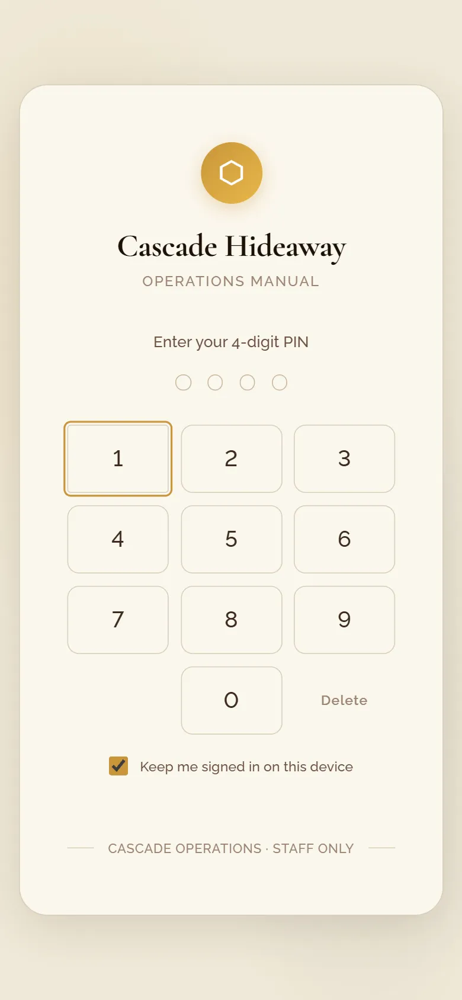
Enter your own PIN or sign-in name. Type it yourself, with nobody watching. If it does not work, ask Lloyd.
Join the Telegram group
Install Telegram and ask Lloyd to add you to the OPS group. Then type /menu in the group. A menu of buttons appears.
PIN and password rules
Your PIN or password is yours only. Every person has their own.
Never share it. Never lend your phone while you are signed in.
Never write it in a chat, a message, a photo or a note. No one on the team will ask you for it.
If you forget it, or think someone saw it, tell Lloyd right away. He will reset it.
The Operations Manual tour
Sign in to the Manual, find the pages you need, and learn what the hidden pages mean.
The Operations Manual is the Cascade handbook on your phone. It holds the standards, the cleaning guide and the appliance guides. Open it when you are not sure how something should be done.
Tap your personal PIN on the number keypad. The dots fill as you tap. The Manual opens when the PIN is right.Removes the last number you tapped. Use it if you tapped the wrong one.Turn it on only on your own phone. Then you do not need your PIN every time. Leave it off on any shared phone.The Manual sign-in screen.
PIN keypadTap your personal PIN on the number keypad. The dots fill as you tap. The Manual opens when the PIN is right.Who: Everyone
DeleteRemoves the last number you tapped. Use it if you tapped the wrong one.Who: EveryoneCan undo
Keep me signed in on this deviceTurn it on only on your own phone. Then you do not need your PIN every time. Leave it off on any shared phone.Who: EveryoneCan undo
Open the Manual.
Tap your PIN on the keypad.
Wait. The screen opens on the Dashboard.
The dashboard: your map of the Manual
The Dashboard is the first page. It has four groups of buttons. Tap a button to open that page or guide. Numbers on the picture match the list under it.
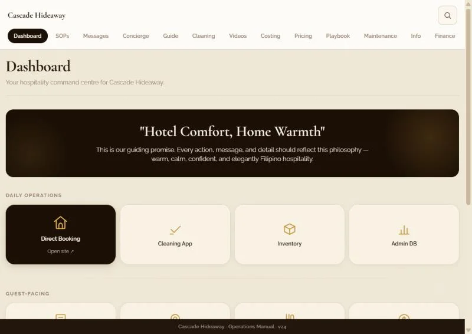
Type a word to find a page. On a computer you can press Ctrl and K.Swipe sideways to see every page: Dashboard, SOPs, Concierge, Cleaning, Videos, Playbook, Maintenance and more. Pages you are not allowed to open are hidden.Direct Booking, Cleaning App and Inventory. The Cleaning App button opens the app you use for every turnover.What guests see: Welcome Guide, Nearby POIs and Dining Map.The 5-Star Mandate and the appliance guides: Smart Lock, EcoFlow River, Aircon Remote, TV Remote, Water Heater, Induction Cooker, Air Purifier, Dust Mite Vac and Iron Guide.Signs you out of the Manual on this phone. Use it if the phone is shared.The Manual dashboard. Groups are the same on every phone; what you can open depends on your role.
SearchType a word to find a page. On a computer you can press Ctrl and K.Who: Everyone
Menu barSwipe sideways to see every page: Dashboard, SOPs, Concierge, Cleaning, Videos, Playbook, Maintenance and more. Pages you are not allowed to open are hidden.Who: Everyone
Daily OperationsDirect Booking, Cleaning App and Inventory. The Cleaning App button opens the app you use for every turnover.Who: Everyone
Guest-FacingWhat guests see: Welcome Guide, Nearby POIs and Dining Map.Who: Everyone
Training & GuidesThe 5-Star Mandate and the appliance guides: Smart Lock, EcoFlow River, Aircon Remote, TV Remote, Water Heater, Induction Cooker, Air Purifier, Dust Mite Vac and Iron Guide.Who: Everyone
Sign OutSigns you out of the Manual on this phone. Use it if the phone is shared.Who: EveryoneCan undo
Group
What is inside
Do you use it?
Daily Operations
Direct Booking, Cleaning App, Inventory
Yes: the Cleaning App button, every turnover. The rest are for the office.
Guest-Facing
Welcome Guide, Nearby POIs, Dining Map
Sometimes, to see what guests see.
Training & Guides
5-Star Mandate and the appliance guides
Yes: open a guide when you are unsure about an appliance.
The Maps page
The Manual now has a Maps page (version 24.2). It shows four maps: every page, turnover at a glance, where things are in the unit, and who to tell when something is wrong.
The Manual's pages at a glance. Tap a page to read about it.
Pages you will not see
The Manual hides some pages from your role, so you do not see a lock or an error. The page is simply not in your menu.
SOPs: the 5-star way to talk to guests
SOP means standard operating procedure. The SOPs page has the 5-star standard from the first message to the review after the stay. It has five parts:
Inquiry & Booking: First Impressions
Pre-Arrival: Build Anticipation
Post-Stay: A Gracious Farewell
Guest Screening: Protecting the Property
Emergency & Complaint Response
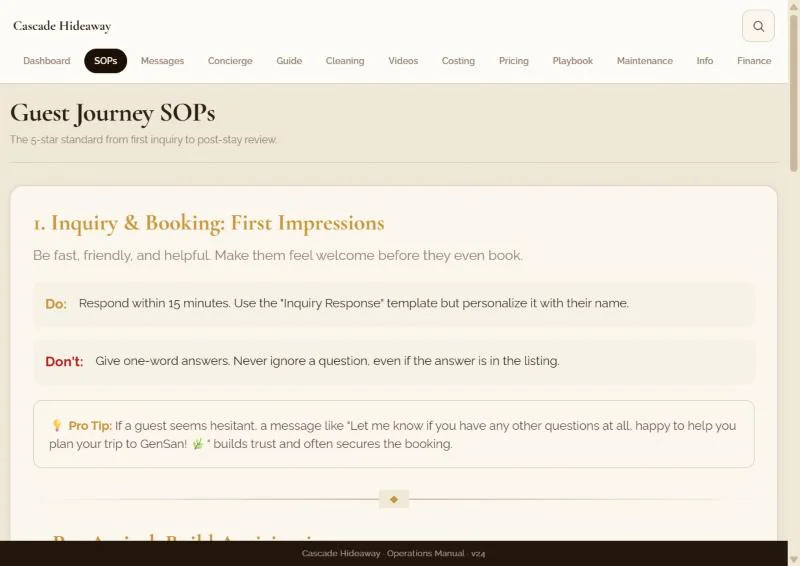
Short lists of what to do and what to avoid.A small hint for a hard moment, for example a guest who is not sure about booking.The SOPs page. You read it; you do not tick anything on it.
Do and Don't boxesShort lists of what to do and what to avoid.Who: Everyone
Pro TipA small hint for a hard moment, for example a guest who is not sure about booking.Who: Everyone
Most guest messages are answered by the office. The SOPs still show you what a great stay feels like, and why small details matter.
The Cleaning page
The Cleaning page is the standard for every turnover. Read it once, then use it as a reminder. It has a green button, Open Cleaning Checklist App — Submit Report, that opens the Cleaner app.
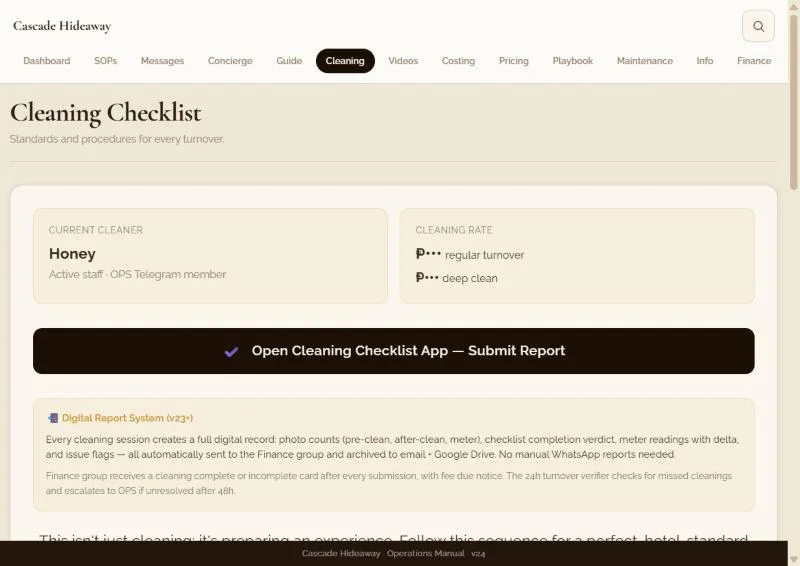
Opens the Cleaner app, where you do the full checklist and send your report.15 minutes. Open the windows, look for damage and take a photo before you clean, and strip the linens.45 minutes. Bathroom, kitchenette and dusting. Dust from top to bottom.30 minutes. Make the bed hotel-style, restock, then vacuum and mop your way out to the door.Odor control, safety and a microfiber tip. See below.The Cleaning page. Its three phases are a standard; the Cleaner app has its own five screens (see Doing a turnover).
Open Cleaning Checklist AppOpens the Cleaner app, where you do the full checklist and send your report.Who: Everyone
Phase 1: Entry & Reset15 minutes. Open the windows, look for damage and take a photo before you clean, and strip the linens.Who: Everyone
Phase 2: Deep Clean45 minutes. Bathroom, kitchenette and dusting. Dust from top to bottom.Who: Everyone
Phase 3: Staging & Final Touches30 minutes. Make the bed hotel-style, restock, then vacuum and mop your way out to the door.Who: Everyone
Important NotesOdor control, safety and a microfiber tip. See below.Who: Everyone
Manual phase
Time
The main points
Phase 1: Entry & Reset
15 minutes
Open windows. Inspect for damage and photograph it before you clean. Strip and bag linens.
Phase 2: Deep Clean
45 minutes
Bathroom: spray, wait 5 minutes, scrub, rinse, dry. Kitchenette: dishes, stove, sink, counters, microwave, fridge. Dust from top to bottom and sanitize remotes, switches and handles.
Phase 3: Staging & Final Touches
30 minutes
Hotel-style bed with tight corners. Pillows fluffed. Restock the basics. Vacuum, then mop from the far corner to the door.
Appliance guides and videos
On the Dashboard, under Training & Guides, five buttons open a small window with a quick guide. Read it, then close it with the ✕.
EcoFlow River: what it can and cannot power during a brownout.
Aircon Remote: the buttons and the right settings.
TV Remote: power, volume, input and streaming.
Water Heater: the indicator lights and when to switch it on and off.
Induction Cooker: which pans work and how to clean it.
Other buttons open guides for the Air Purifier, Dust Mite Vac and Iron. Non-stick pan care and the Air Purifier guide also have their own pages with videos. The full short version is in Power, safety and appliances.
The Videos page has short training videos. Watch one, then follow the 2 to 4 key steps written under it. It includes a spotless-cleaning checklist that works from dry to wet and from top to bottom.
Doing a turnover with the Cleaner app
Phase 0 to 4 in the Cleaner app, step by step, with photos, meters, supply log and submit.
You do every cleaning in the Cleaner app. It walks you through five screens, one after the other. The app will not let you skip a required step, so you cannot forget the important things.
Open the app here: Cleaner app. Sign in with your own name and PIN. Your PIN is personal: never write it down and never share it.
The five screens of a turnover, from Setup to Submit. Photos are taken in three places.
The whole turnover in one look
Tap through the steps below to get the big picture. Each panel is one screen of the app. The details for each screen come after.
Sign in
Sign in with your own name and PIN. The app says "Signed in as" with your name. If it is not you, tap Switch account.
Phase 0 - Setup
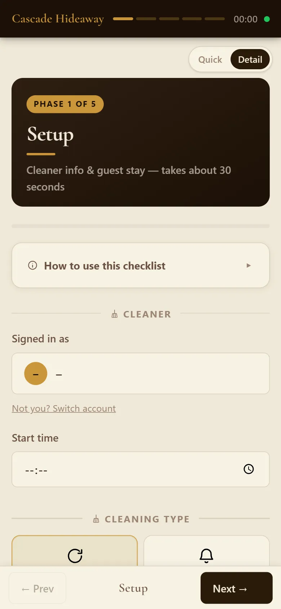
About 30 seconds. Choose the Cleaning Type. Pick the stay in Which stay is this report for?. Check the date. Tap Next →.
Phase 1 - Document
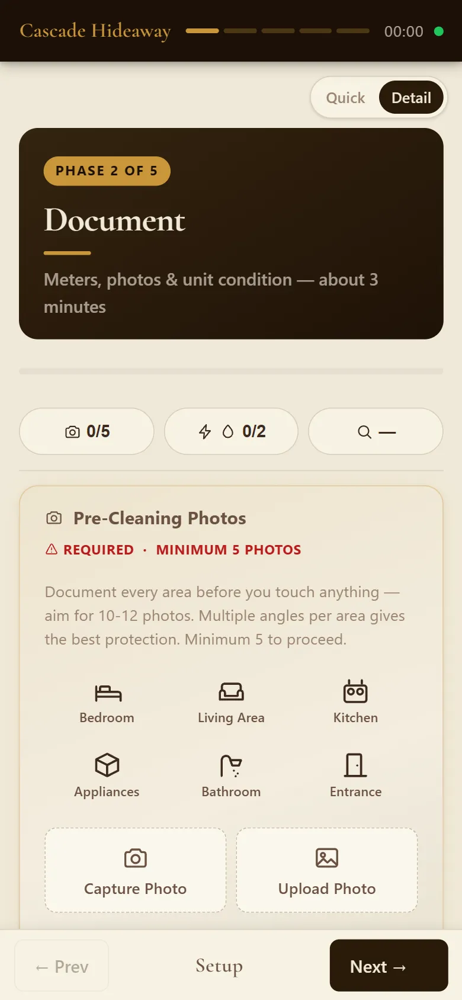
About 3 minutes, before you touch anything. Take the pre-cleaning photos. Type the two meter readings and photograph both meters. Say if the unit is All Clear or Found Something.
Phase 2 - Arrive & Prep
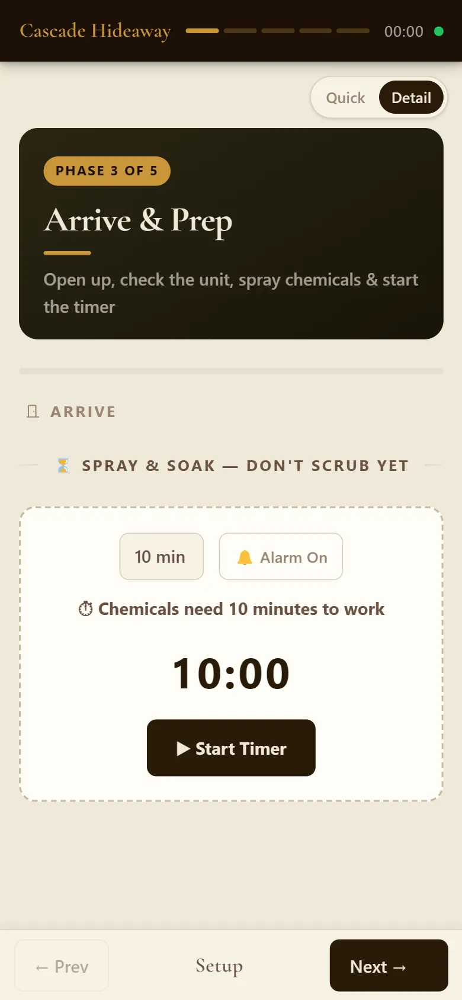
Open up, check the unit, and spray the chemicals. Start the timer with ▶ Start Timer. Do other jobs while the chemicals soak. Do not scrub yet.
Phase 3 - Clean
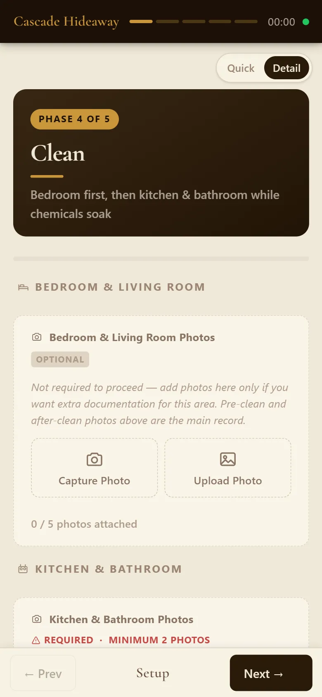
Clean the bedroom first, then the kitchen and bathroom. Take at least 2 kitchen photos. Then open the supply log.
Supply log
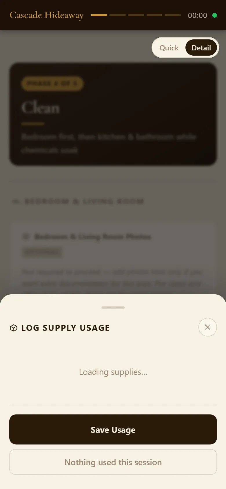
Tap Open Supply Log. Add what you used or refilled. Tap Save Usage. If you used nothing, tap Nothing used this session. You cannot go on until you do one of them.
Phase 4 - Finish
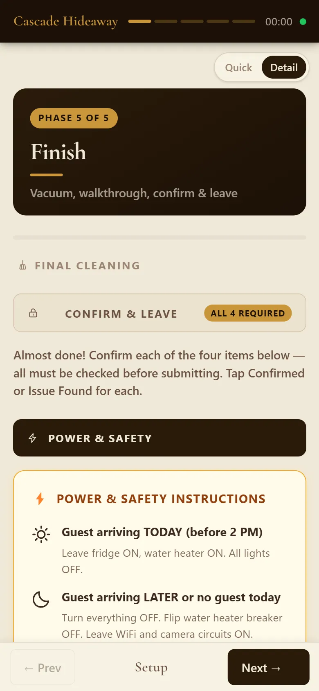
Do the final cleaning. Answer every Confirm & Leave item. Follow the power and safety instructions. Take the after-cleaning photos.
Submit
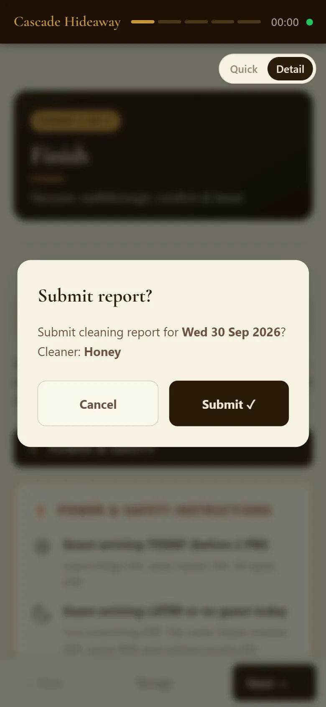
Tap Submit ✓. A box called Submit report? opens. Read it. Tap Submit ✓ again. Keep the app open until you see Report Submitted.
Cleaning types
In Phase 0 you choose the type of cleaning. The type changes what the app asks for.
Type
When you use it
What changes
Turnover (the default)
A guest has checked out and a new guest arrives.
Everything is required: guest name, both meters and meter photos, 5 pre-cleaning photos, 2 kitchen photos, supply log, 5 after-cleaning photos, and all six Confirm & Leave items.
Mid-Stay
A scheduled light refresh while the guest is still staying.
Meter readings are optional. You need 4 photos before and 4 after (bed and living area, bathroom, kitchen, floors). No kitchen photo rule and no utensil check. Four Confirm & Leave items.
Deep Clean
A thorough clean that Lloyd or Marifel asks for.
Same as a turnover, but the last guest name is not required.
Emergency
A repair visit or urgent problem.
Meters, photos and guest name are not required. You must write an Issue description, and take photos if it is safe. Four Confirm & Leave items.
Phase 0 - Setup (about 30 seconds)
Fill in the small form at the top of the app.
Read the How to use this checklist guide once. Tap it to open it. Tap Got it to close it.
Check "Signed in as" shows your name.
Choose the Cleaning Type: Turnover, Mid-Stay, Deep Clean or Emergency.
Check the Cleaning date.
Open Which stay is this report for? and choose the stay. This is the stay picker. The check-in date, check-out date and guest name fill in for you.
Tap Next →.
The stay picker only lists stays that make sense. A checkout is offered only after 12 noon on its date. A guest who has not arrived yet is not offered.
Phase 1 - Document (about 3 minutes)
Do this before you clean. It protects you and Cascade if there is a claim later.
Step 1: Pre-cleaning photos
You need at least 5 photos on a Turnover or Deep Clean. On a Mid-Stay you need 4.
Aim for 10 to 12. Take several angles of each area.
Cover these areas: Bedroom, Living Area, Kitchen, Appliances, Bathroom, Entrance.
Use Capture Photo to open the camera, or Upload Photo to pick from your gallery.
The counter shows how many you have, for example "0 / 12 photos attached".
Step 2: Meter readings
Type the electric reading (kWh) and the water reading (m³) exactly as the meters show. The app also shows the previous reading and the difference. Both readings are required on a Turnover and a Deep Clean. On a Mid-Stay they are optional.
Step 3: Meter photos
Tap Add Photo under the electric meter and again under the water meter. The photos upload by themselves in the background. You do not need internet to keep going.
If the app finds a problem with a meter photo, it may offer I could not photograph the meters. This is a meter-skip.
Write a few words about what happened, for example "meter room was locked".
Tap Submit without meter photos, just this once.
You can do this once. If your last report also had no meter photos, the app will not offer it. Never two in a row.
You still type both readings.
Step 4: Unit condition
Look around before you start. Then choose one:
All Clear: no damage or unusual issues.
Found Something: a box opens. Write what you found in Describe what you found and add a photo with Add photo (optional).
Then tap Next →. On a Turnover or Deep Clean, the app needs both meter readings, both meter photos and your pre-cleaning photos before it lets you go on.
Phase 2 - Arrive & Prep
The screen says "Open up, check the unit, spray chemicals and start the timer". Tick each task as you finish it.
Under Arrive: gather your tools, open windows, turn on the lights, test the appliances, look for damage and leaks, and check the key card is on its keychain.
Strip the bed and towels. Look for stains and pre-treat them.
Pre-spray the toilet, shower, stove and microwave. Do not scrub yet.
Pick a time: 5 min, 10 min, 15 min or 20 min. The app suggests 10 minutes.
Tap ▶ Start Timer.
The dwell time is the time the chemicals need to soak. An alarm plays when it ends. Tap Alarm On to mute it.
Phase 3 - Clean
The screen says "Bedroom first, then kitchen and bathroom while chemicals soak".
Bedroom & Living Room: tick the tasks. Photos here are optional.
Kitchen & Bathroom: tick the tasks. On a Turnover or Deep Clean, photos here are required.
Kitchen photos
Take at least 2 photos. They must show the utensil drawer, the dish rack and the cookware. The office uses them to check the kitchen set against the list.
Supply log
The supply log tells the office what was used, so they can restock.
Tap Open Supply Log.
Use the plus and minus buttons for each item you used or refilled. Liquids are in ml.
Tap Save Usage. If you used nothing, tap Nothing used this session instead.
Additional expenses (optional)
Did you spend money for the unit, for example a replacement item or a tricycle to buy supplies? Tap ＋ Add an expense. Type the amount and a short description. Both are needed. An amount with no description is not sent. Leave it empty if you spent nothing.
Phase 4 - Finish
Do the Final Cleaning tasks: vacuum and mop toward the door, wipe the balcony, walk through as the guest, and put the vacuum on charge.
Choose if you will do the weekly deep tasks (see below).
Take the after-cleaning photos.
Tap Submit ✓.
Confirm & Leave
These are the last checks before you go. For each one tap Confirmed, or tap Issue Found if something is wrong. You cannot submit until every item that shows is answered.
Check
Turnover and Deep Clean
Mid-Stay and Emergency
AC set to 24°C, and the fridge is cold
Yes
Yes
Utensil set complete (the drawer, the rack and the cookware, counted against the list)
Yes
No
EcoFlow at 100% charge
Yes
Yes
Key card opens the door, and the guest code opens the lock
Yes
Yes
Smart lock battery is not low
Yes
Yes
"Waiting for Check In" automation is ON in SmartLife
Yes, do it last
No
These are the Confirm & Leave checks. A few notes:
EcoFlow: it must be charged to 100% at every turnover. If it reads less, leave it on charge. Do not close the session until it is full. It stays at Cascade always.
Key card: tap the card on the reader. It must beep and unlock. Leave the card on the keychain inside the unit. Put the key card and both remotes back on the wooden tray on the TV cabinet. The gate pod lock stays indoors with them.
Guest code: enter the code from the current booking on the keypad. The lock must open cleanly. Never write the code anywhere.
SmartLife: open the SmartLife app, tap Smart at the bottom, then Automations at the top. Switch on "Waiting for Check In". Do this as the very last thing, after you lock up. If the switch will not stay on, tap Issue Found.
Weekly deep maintenance (optional)
Near the bottom is a switch: Include weekly deep maintenance tasks this session?. Turn it on when you have time. The app then shows only the tasks for the current week of the month, so the heavy work is spread out and never piled on one day. The week comes from the cleaning date: days 1 to 7 are week 1, days 8 to 14 are week 2, days 15 to 21 are week 3, and day 22 onward is week 4.
Week
Tasks
Week 1
Deep-vacuum the sofa and mattress. Empty the vacuum dust collector and clean its filter. Swap the sofa cover and mattress protector (every two weeks). Check the smart lock battery.
Week 2
Deep-clean the refrigerator. Clean the air purifier. Clear the floor drains in the shower and kitchen sink.
Week 3
Wash and dry the AC filters. Vacuum behind and under furniture. Liquid sosa drain treatment, only if no guest arrives the next day (every two weeks). Test every light bulb.
Week 4
Descale the iron steamer. Wipe wall scuffs, door frames, switch plates and skirting. Inspect for mold and pests under the sinks and on the balcony.
After-cleaning photos
You need at least 5 photos (Mid-Stay: 4). The app asks you to aim for 12 to 14, with several angles. Show every area clean and ready: Bedroom, Living Room, Kitchen, Bathroom, Toilet, Entrance. They are sent with your report to the OPS group.
Submitting
When everything is done, tap Submit ✓. A box called Submit report? shows your name and the cleaning date. It may also show warnings:
Warning in the box
What it means
What to do
issue(s) reported
You marked something as an issue. It will be included in the report.
Check it is what you meant.
photo(s) still uploading
Some photos are not sent yet. The app will try to send them first.
Keep the app open and wait.
The dwell timer was not started
The chemicals may not have soaked long enough.
Only a note. You can still submit.
expense(s) logged
The money you added will go for reimbursement.
Check the total.
An expense has an amount but no description
It will not be sent without a description.
Tap Cancel, add the description or remove the amount.
Tap Submit ✓ once. The button changes to "Submitting…". Wait. When you see Report Submitted, you are done. It says "Report + photos sent to Telegram OPS group" and shows the time taken. Tap Sign out if the phone is shared.
If you are interrupted: your draft
The app saves your work on your phone as you go. If you close the app or lose signal, open it again. A box called Resume session? appears.
Resume ↺ puts you back where you stopped, with your answers and photos.
Start fresh throws the draft away.
A draft is kept for about 24 hours. It is only on your phone, so it is lost if you clear the browser data or reinstall the app.
What if...
Power, safety and appliances
What to switch on and off when you leave, the EcoFlow, brownout days and the appliance basics.
Cascade has power cuts (brownouts) from time to time. This chapter tells you what to leave on or off, how to use the EcoFlow backup battery, and how to look after the main appliances.
At the end of a turnover the app shows Power & Safety Instructions. Which one to follow depends on when the next guest arrives.
Guest arriving TODAY (before 2 PM)
Guest arriving LATER, or no guest today
Leave the fridge ON.
Turn everything OFF.
Leave the water heater ON.
Flip the water heater breaker OFF.
All lights OFF.
Lights OFF.
Nothing else to change.
Leave the WiFi and camera circuits ON.
The app also asks for two final checks in the power section:
EcoFlow RIVER 3 stowed in its spot, cable tidy. Check it is there and not damaged. If it is missing, report it at once.
Final power & safety check. This is marked Critical. Every window is latched, the door is locked and all lights are off.
The Confirm & Leave list also asks for the EcoFlow at 100% and the air conditioner at 24°C. See Confirm & Leave.
Appliances in short
The full guides are in the Manual, under Training & Guides on the Dashboard (see Appliance guides and videos). Here is the short version.
EcoFlow (the backup battery)
You can power
Never power
Phones and tablets (USB ports), LED lights, the stand fan (use the AC port), a laptop and the WiFi router
The air conditioner (too much power, it will overload) and the water heater
Battery level
What to do
60 to 100%
Safe for a long time. Use the fan and lights freely.
20 to 60%
Essentials only: phone charging and one light.
Below 20%
Phones only. Keep what is left for an emergency.
When power returns, plug the EcoFlow into the wall. A full charge takes about 1 to 2 hours.
At every turnover the EcoFlow must be charged to 100%. The app asks you to confirm it. If it reads under 100%, leave it charging and do not close your session until it is full.
Air conditioner remote
The aircon remote and the TV remote are kept together on the wooden tray on top of the TV cabinet, just below the TV, beside the flower vase.
Guests are comfortable at 26°C, mode COOL, fan AUTO.
The Mode button cycles COOL, FAN, DRY and AUTO. SLEEP raises the temperature 1°C each hour. ECO saves power. SWING moves the louver. TIMER switches it off after some hours.
Leaving after a cleaning: set the air conditioner to 24°C. The Cleaner app asks you to confirm it in Confirm & Leave.
Turn it fully off if the unit will be empty for 24 hours or more.
Water heater
A red light means it is heating. Light off or green means the water is ready.
Switch it ON before a shower. Wait 3 to 5 minutes for hot water.
Turn it OFF after every guest checks out. Turn it ON 10 to 15 minutes before the next guest arrives.
Never switch it on if the water supply is off. It will burn out.
Induction cooker
Use pans with a magnetic base or the coil symbol. Aluminum, copper, glass and ceramic do not heat.
Place the pan in the centre, press POWER, then use + and − to set the level. Levels 4 to 5 are normal cooking.
It switches itself off if no pan is detected for 60 seconds.
Let the glass cool, then wipe with a damp cloth. Never put it in water and never use rough pads.
Air purifier
At each arrival, check that it is on and the filter light is green.
In the weekly deep tasks, clean the dust from the front grille with a brush and wipe the outside. Do not remove or wash the inside filter.
Non-stick pans
Use gentle methods on coated pans. Avoid rough pads and hard scrubbing, which scratch the coating. The Manual has short videos on removing burnt marks safely.
Brownout days
A brownout is a planned power cut. When one is coming, the OPS group gets a notice that says the power will be off, and when. The notice comes in the OPS group and also in the morning summary.
The day before: charge the EcoFlow to full.
Keep the emergency light ready in the unit.
During the cut: use the EcoFlow only for the things in the "You can power" list.
When power returns: plug the EcoFlow in again and check the fridge is cold.
The Cascade standard look
This is what a finished, guest-ready unit looks like. After you clean, compare each area with its photo.
Where things are in the unit. Tap an item to read about it.
Bed
The made bed, ready for the guest.
Room
The bedroom, with the bed, sofa, coffee table and floor lamp.
Living area
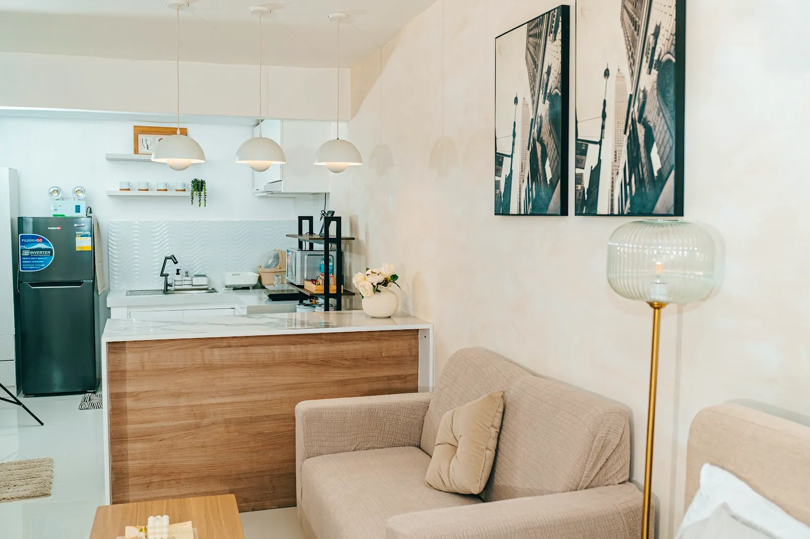
The sofa, the bar counter and the kitchenette.
TV wall
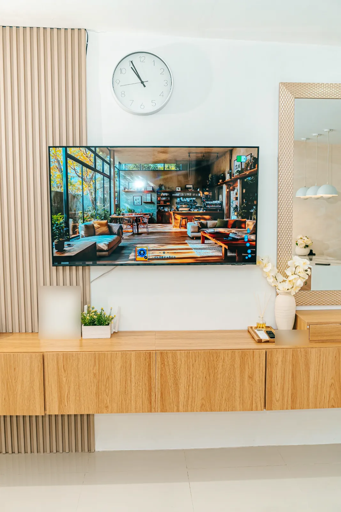
The TV, the clock, the mirror, the plant and the tray on the cabinet.
Remote tray
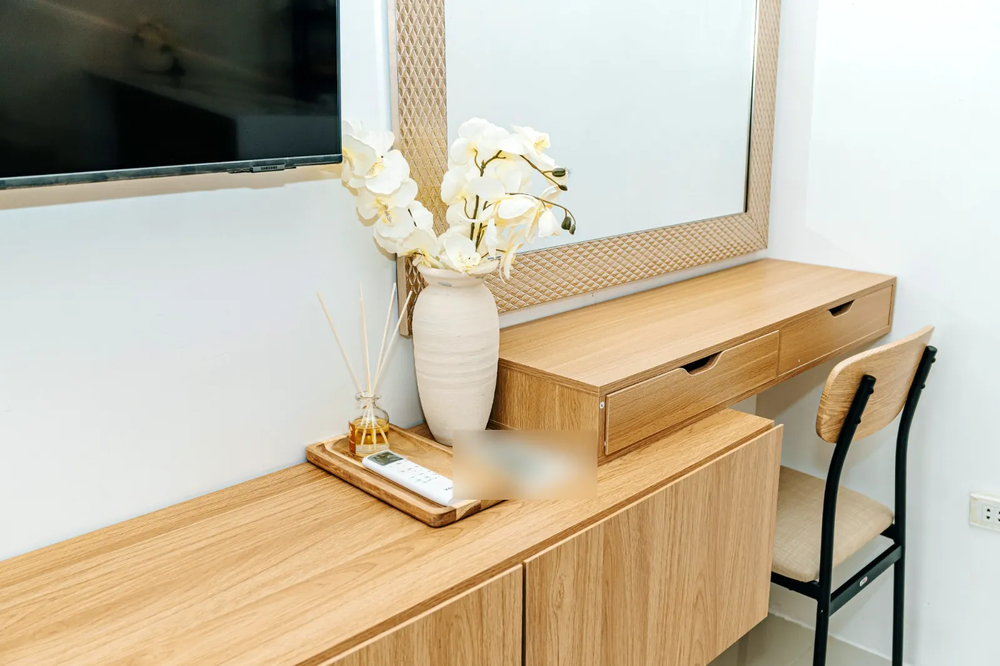
The wooden tray on the TV cabinet, beside the flower vase.
Kitchen
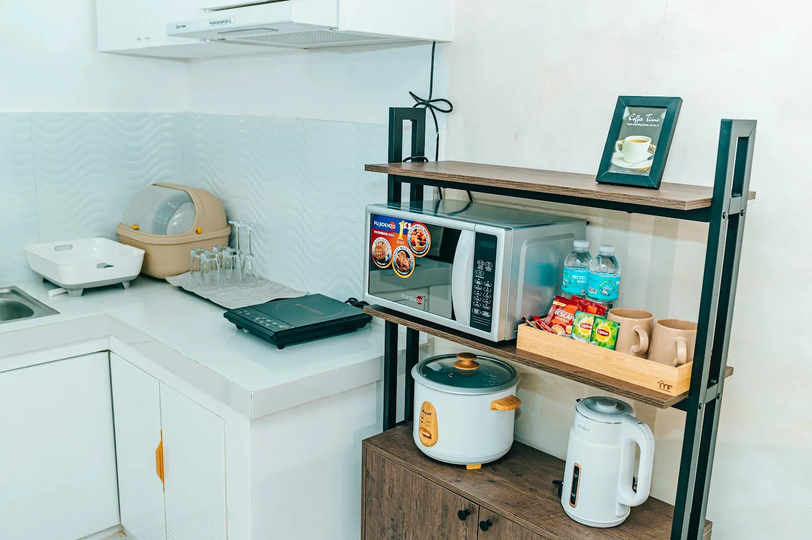
The induction cooker, the dish rack, the glasses and the microwave shelf.
Kitchen shelf
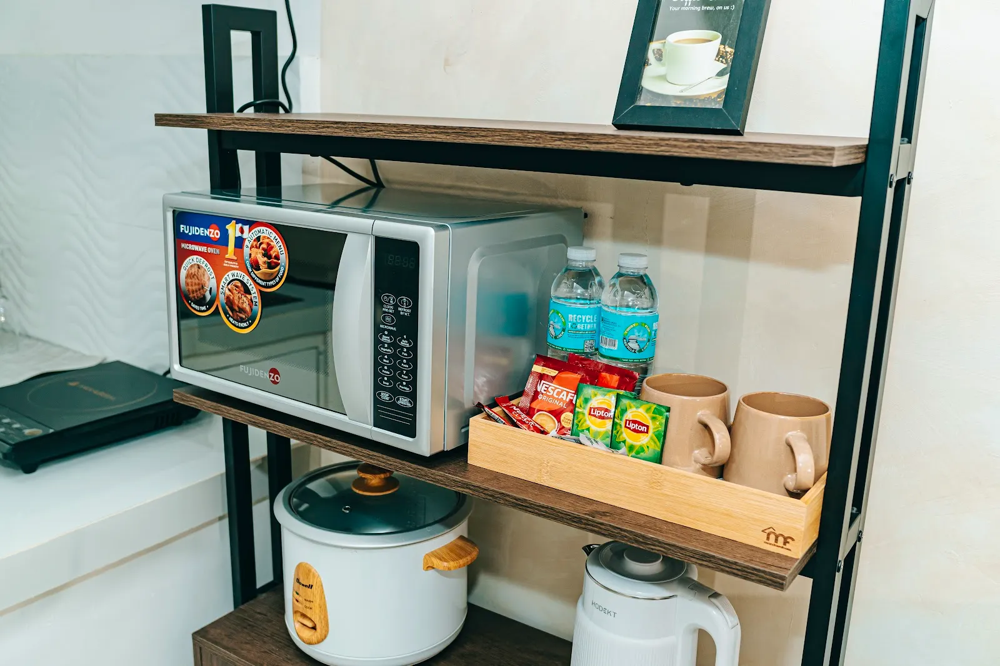
The microwave, the coffee and tea box, the rice cooker and the kettle.
Sink
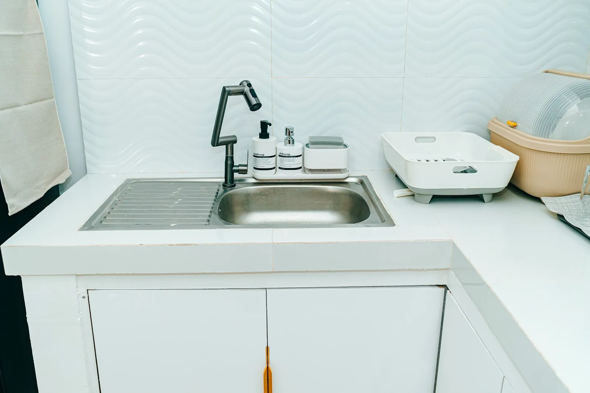
The kitchen sink, with the soap and a fresh sponge.
Bathroom
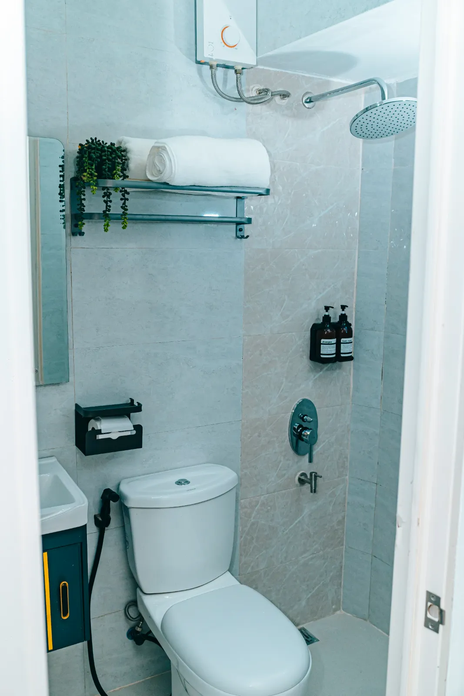
The bathroom, with fresh towels, soap and toilet paper.
Laundry corner
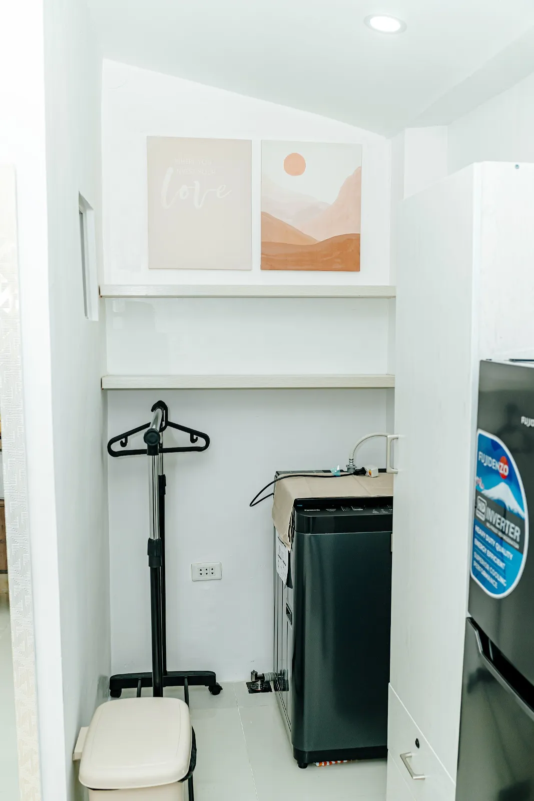
The washing machine, the garment steamer and the hangers.
Entrance
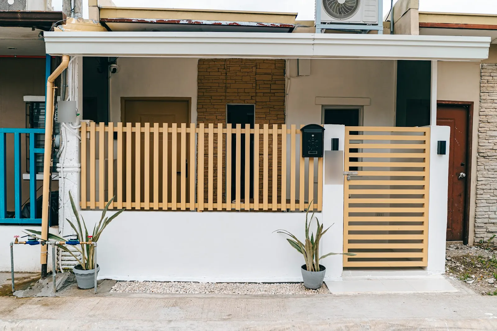
The front gate, seen from the street.
Towels
There is no separate photo for towels. The bathroom photo above shows how they look.
The 5-star standard, in short
Cascade promises Hotel Comfort. Home Warmth. Every action should feel warm, calm and confident.
No bad smell when a guest walks in.
The bed is made hotel-style, with tight corners and fluffed pillows.
Surfaces, mirrors and glass are clean and streak-free.
The basics are restocked, so a guest never has to ask for toilet paper or coffee.
Everything works: lights, AC, fridge, lock, WiFi.
Decision tree: the power is out
Tap the answer that fits. It shows what to do next.
Did the OPS group tell you about a brownout for today?
Is a guest in the unit?
The EcoFlow should already be charged from yesterday.
Check it is on and has power. Use it for phone charging, lights, the fan and the router only.
Do not run the air conditioner or the water heater on it.
Write in the OPS group that you checked the unit and the EcoFlow, with the time.
When power returns, plug the EcoFlow in again and check the fridge is cold.
Make sure the EcoFlow is charged and stowed in its spot. The emergency light is ready.
If a guest arrives today, write in the OPS group so Lloyd or Marifel can decide what to tell them.
When power returns, plug the EcoFlow in and check the fridge is cold.
Is a guest in the unit?
Tell the OPS group first. A cut that was not announced is something the office needs to know at once.
Write in the OPS group: the time, what you see, and that a guest is inside.
Use the EcoFlow for phone charging, lights, the fan and the router only. Never for the air conditioner or the water heater.
Ask Lloyd or Marifel what to tell the guest, and wait for the answer.
When power returns, plug the EcoFlow in and check the fridge is cold.
Write in the OPS group: the time and what you see.
Wait until the power is steady before you switch appliances back on.
When power returns, check the fridge is cold and plug the EcoFlow in.
Tell the OPS group it is back.
A tour of the admin dashboard
Every page of the admin dashboard for the office, with its buttons, who can press them, and which ones cannot be undone.
The admin dashboard is the office screen. It shows who is in the house, who is coming, what needs attention, and lets you decide bookings, log stock and check the money. This chapter walks through each page and each button.
Each button below carries a label so you know what you are about to do.
Badge
What it means
OwnerAdmin
Who can use the button. Owner (Lloyd) and Admin (Marifel) can do the same things in the dashboard.
Cleaner
The cleaner account (Honey) can look at many pages but change almost nothing. See What a cleaner account sees.
Posts money at once
The button changes money or cannot be taken back. Read the screen first. Press once.
Can undo
After you save, a green message appears for 8 seconds with an Undo button.
Signing in
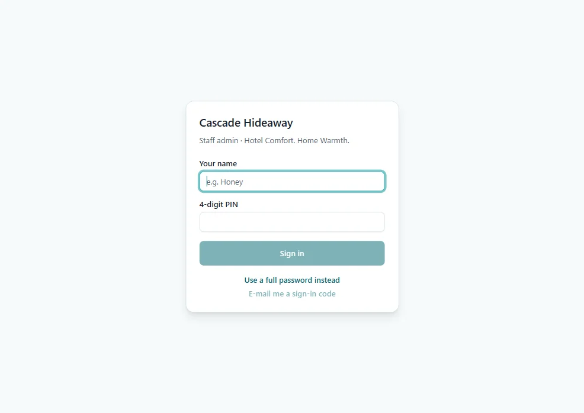
Type your first name, for example Honey. Capital letters do not matter.Your own four digits. The box hides them as you type.Grey until you have typed four digits. It says Signing in while it works.The sign-in card. Nothing typed here is shown in this guide.
Your nameType your first name, for example Honey. Capital letters do not matter.Who: Everyone
4-digit PINYour own four digits. The box hides them as you type.Who: Everyone
Sign inGrey until you have typed four digits. It says Signing in while it works.Who: Everyone
Open the dashboard on your phone or computer. The owner will give you the address.
Type your Your name and your 4-digit PIN.
Tap Sign in.
The owner and Marifel land on Today. A cleaner lands on Operations.
The link E-mail me a sign-in code only works for a real e-mail address. Staff logins do not have one, so do not use it.
To sign out, open the Account menu (your initial, top right) and tap Sign out.
The menu on the left
The menu is on the left. On a phone, tap Toggle navigation to open it. You only see the items your role may use. Sub-pages appear when you are inside that section.
Menu item
Sub-pages
Who sees it
Today
none
OwnerAdminCleaner
Bookings
List, Calendar, Inquiries
OwnerAdminCleaner
Guests
five tabs inside the page
OwnerAdmin
Operations
Cleaning log, Work orders, Notices
OwnerAdminCleaner
Inventory
Stock, Purchases, Counts
Stock and Purchases: everyone. Counts: OwnerAdmin
Finance
Review queue
OwnerAdmin
Under the menu is a group called Apps with links to the Guest guide, Cleaner checklist, Operations manual and Booking site.
If you open a page you may not use, you see a grey card: Not available for your role. Nothing is broken.
The top bar
Toggle navigation opens or closes the menu. Shortcut: Ctrl+B (Cmd+B on a Mac).
Search or jump to… opens the global search. See the next section.
Apps (grid icon) has the same links as the Apps group.
The sun or moon icon lets you pick Light, Dark or System. It is saved on this device only.
The Account menu shows your name and role, and has Sign out.
Messages appear at the bottom right. Green means saved. Red means it did not work. Read the words in red. They tell you why.
Global search
Press Ctrl+K (Cmd+K on a Mac), or tap Search or jump to…. Type at least two letters.
Records finds bookings by guest name or code, guests by name, phone or e-mail (owner and Admin only), stock items, cleaning reports and follow-up tasks. Tap a result to open it.
Pages lists every page you may open. Type cal and choose Bookings › Calendar.
Search only reads. It never changes anything. If it says No matches, try fewer letters.
Undo toasts and the change history
After many saves, the green message has an Undo button for 8 seconds. Tap it and the record goes back to how it was. The undo is also written in the history.
Has an Undo
Has no Undo
Follow-ups, work orders, notices, shopping-list changes, meter flags, stock adjustments
Booking decisions and cancellations, stock counts, guest merges, companions, cleaning evidence and readiness reviews
Keyboard shortcuts
Keys
What they do
Ctrl+K or Cmd+K
Open or close the search
Ctrl+B or Cmd+B
Open or close the menu
Tab, then Enter or Space
Open a row in a table
Esc
Close a window or side panel
There are no other shortcuts.
How lists behave
Your filters are saved in the address. The Back button and a copied link bring the same view back. Clear filters appears when a filter is on.
Tap a column heading to sort. It sorts only the 25 rows on the page you are looking at. Use Previous page and Next page to move.
Columns shows or hides columns. Some lists have a Comfortable or Compact switch.
A copy icon next to a code, phone or e-mail copies it. It turns into a tick.
A dash (—) means "not known". It never means zero.
A red box with Retry means the page could not load. It does not mean everything is fine. Tap Retry.
Save forms protect you from a double tap after a bad signal. Still, press a save button once and wait for the message.
Money shows as PHP. All times are Manila time.
Today
OwnerAdminCleaner Your morning page. Nothing can be changed here. Every card is a link to the record behind it. It refreshes by itself every 2 minutes.
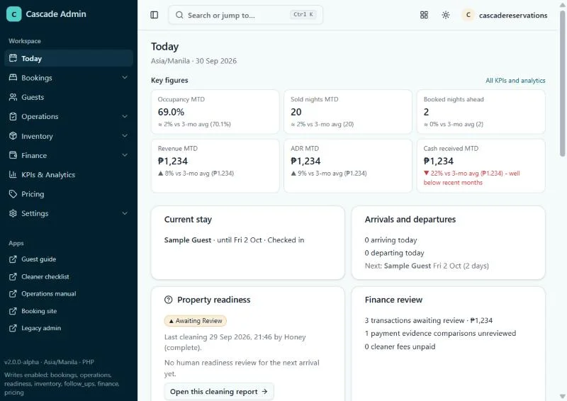
Month-to-date occupancy, sold nights and booked nights ahead. Revenue and cash tiles show only for the owner and Admin.Who arrives and leaves today, and the next confirmed arrival.Ready, not ready or awaiting review, from the last cleaning report. The button opens that report.A list ordered P1, P2 and so on. Each line has an Open button.Today, as the owner sees it. A cleaner sees no Finance review card.
Key figuresMonth-to-date occupancy, sold nights and booked nights ahead. Revenue and cash tiles show only for the owner and Admin.Who: Owner, Admin
Arrivals and departuresWho arrives and leaves today, and the next confirmed arrival.Who: Everyone
Property readinessReady, not ready or awaiting review, from the last cleaning report. The button opens that report.Who: Everyone
What needs attentionA list ordered P1, P2 and so on. Each line has an Open button.Who: Everyone
Card
What it tells you
Current stay
The guest in the house and their check-out date. "Nobody in house by dates" when empty.
Finance review
How many transactions and payment receipts wait for a decision, and how many cleaner fees are unpaid. Owner and Admin only.
Low stock, Follow-ups and handoffs, Notices
Short lists that link to Inventory, the Guests page and Notices.
At the bottom you see Source updated and Calendar sync times. That is how old the data is.
Bookings list
OwnerAdminCleaner One list of Airbnb stays, direct bookings and calendar blocks. You can only read it here. Tap a row to open the booking.
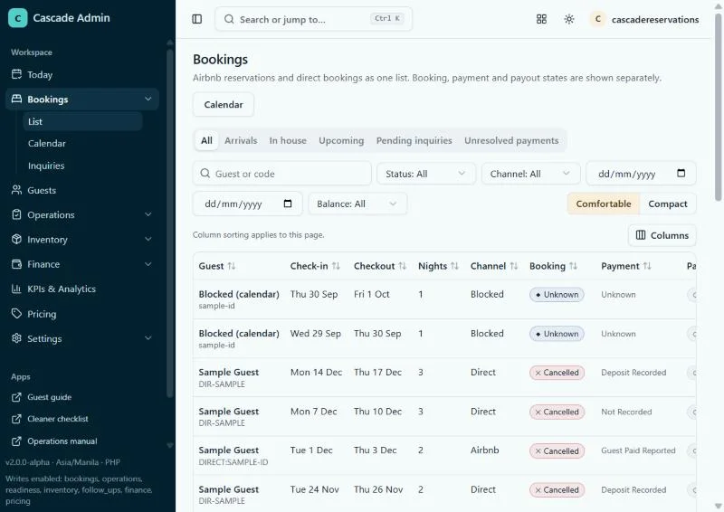
All, Arrivals, In house, Upcoming, Pending inquiries, Unresolved payments.Search by guest or code. Filter by Status, Channel, dates and Balance.Airbnb, Direct, Calendar only or Blocked. The last two are calendar blocks, not stays.Header button that opens the month grid.The Bookings list.
TabsAll, Arrivals, In house, Upcoming, Pending inquiries, Unresolved payments.Who: Everyone
Filter barSearch by guest or code. Filter by Status, Channel, dates and Balance.Who: Everyone
ChannelAirbnb, Direct, Calendar only or Blocked. The last two are calendar blocks, not stays.Who: Everyone
CalendarHeader button that opens the month grid.Who: Everyone
Unresolved payments shows direct bookings with no receipt or deposit recorded.
The last column shows the calendar link: Linked, Date match or No event.
The footer says Calendar last synced.
Calendar
OwnerAdminCleaner A month grid of who stays which nights. Read only. Dragging does nothing on purpose.
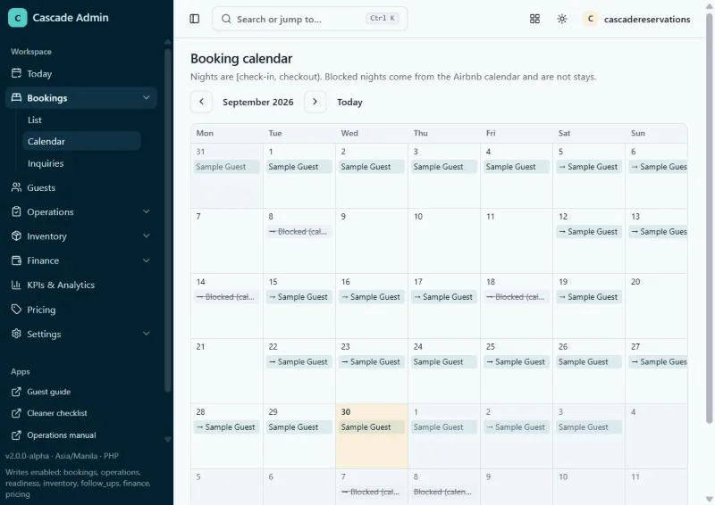
Previous month, Next month and a Today button.An arrow marks the check-in day. Tap a chip to open the booking.Solid is Airbnb, blue is direct, dashed is an inquiry, struck through is blocked.The month calendar.
Month arrows and TodayPrevious month, Next month and a Today button.Who: Everyone
Guest chipsAn arrow marks the check-in day. Tap a chip to open the booking.Who: Everyone
LegendSolid is Airbnb, blue is direct, dashed is an inquiry, struck through is blocked.Who: Everyone
A stay covers the check-in night but not the check-out night. Cancelled stays are not drawn.
Inquiries
OwnerAdmin to decide. Everyone can read. Direct booking requests (each one is an inquiry) from the booking site wait here for a yes or no.
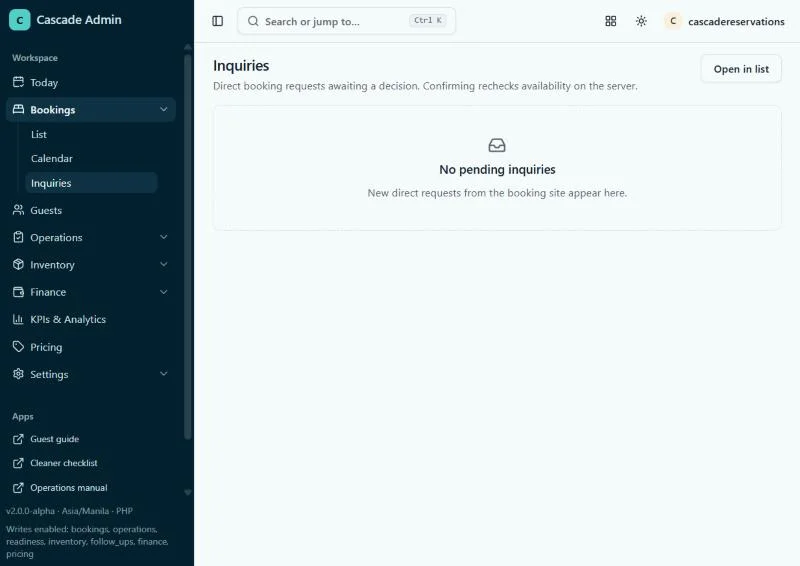
Guest, code, dates, guests, quoted price, deposit and time asked.Confirms the booking and starts the guest messages. It cannot be undone here.Declines the request. The guest is not messaged. Reply in Messenger.Shows the same requests in the Bookings list.Pending inquiries.
Inquiry cardGuest, code, dates, guests, quoted price, deposit and time asked.Who: Owner, Admin
ConfirmConfirms the booking and starts the guest messages. It cannot be undone here.Who: Owner, AdminCannot undo
DeclineDeclines the request. The guest is not messaged. Reply in Messenger.Who: Owner, AdminCannot undo
Open in listShows the same requests in the Bookings list.Who: Everyone
Button
What happens
Badge
Confirm then Confirm in the window
The dates are checked again. The booking becomes confirmed, the calendar block is made, and the system sends the guest the confirmation message.
Cannot be undone
Decline then Decline in the window
The request is closed. The guest is not told by the system.
OwnerAdminCleaner Tap any booking to open it. Only Cancel booking can change anything, and only for direct bookings.
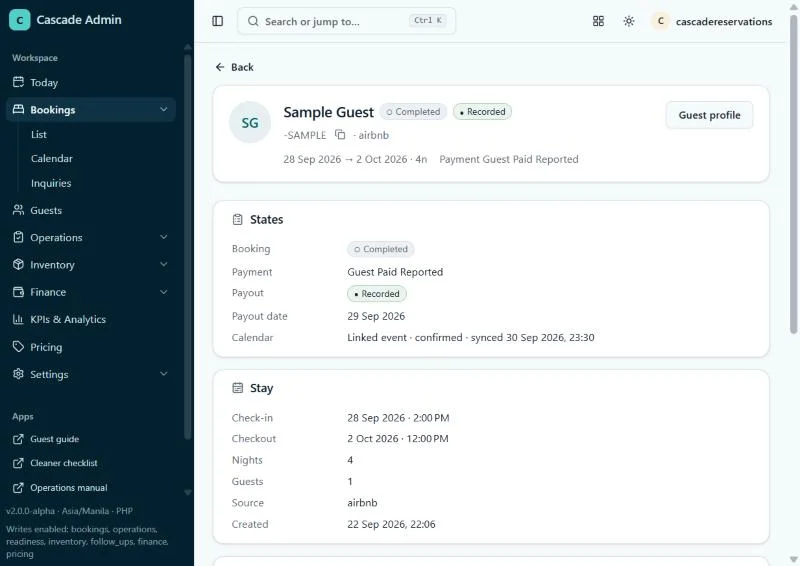
Guest, booking code with a copy icon, channel, dates and payment state.Direct bookings only, and only if not already cancelled or finished.Dates, nights, guests, and the money. Cleaners do not see the money.Staff decisions and lifecycle events for this booking.A booking, opened.
Header cardGuest, booking code with a copy icon, channel, dates and payment state.Who: Everyone
Cancel bookingDirect bookings only, and only if not already cancelled or finished.Who: Owner, AdminCannot undo
Stay and ChargesDates, nights, guests, and the money. Cleaners do not see the money.Who: Owner, Admin
TimelineStaff decisions and lifecycle events for this booking.Who: Everyone
Cards on the page: States, Stay, Charges, Payment evidence and ledger, Cleaning, Timeline and Conversations. Buttons: Back and Guest profile.
Cancel booking
Open the direct booking. Tap Cancel booking.
In Cancel this booking, type the Reason (required). Three letters or more.
Tap Cancel booking to confirm, or Keep booking to stop.
Read the message Booking cancelled.
Guests
OwnerAdmin only. The cleaner never sees this page. It is the guest book, the follow-up list and the Messenger handoff list. It has five tabs.
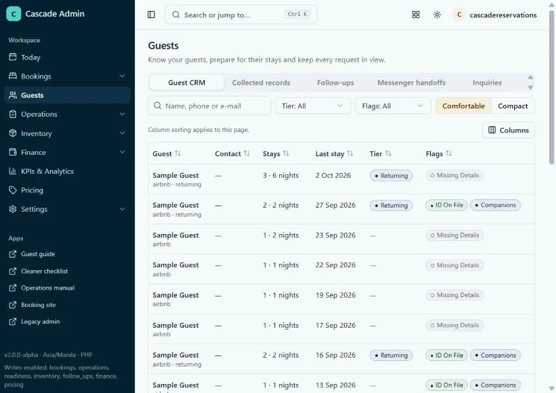
Guest CRM, Collected records, Follow-ups, Messenger handoffs, Inquiries.Name, phone or e-mail. Filter by Tier (New, Returning, VIP) and Flags.Tap a row to open the guest profile.The Guests page.
Search and filtersName, phone or e-mail. Filter by Tier (New, Returning, VIP) and Flags.Who: Owner, Admin
Guest rowTap a row to open the guest profile.Who: Owner, Admin
Tab
What it is for
Buttons
Guest CRM
Every guest, with stays, last stay, tier and flags such as ID on file, Birthday soon or Missing details.
Clear filters
Collected records
A private viewer for the guest details folder kept on this computer. Nothing is uploaded.
Choose folder, Choose collection file, Clear records
Follow-ups
To-dos about a guest, for example a promised item. Each row has an Open guest link. Can undo
New follow-up
Messenger handoffs
Times the concierge passed a guest to the host. Read only. You answer in the Facebook Page inbox.
copy icon on the guest ID
Inquiries
A read-only list of booking requests. Decide them on Bookings.
none
Collected records
This tab reads a folder on this computer. The words on screen: Records stay in this tab's memory and clear when you leave it. Choose the prepared folder, then search. Tap a record to open its sheet. Reveal private details shows ID data only while you look.
Guest profile
Open a guest to see Contact, Record, Private guest details, Companions, Follow-ups and a Timeline.
Button
What it does
Badge
Edit profile then Save
Changes only the fields you touched. A Reason for change of 3 letters or more is required.
Saved in history, no Undo toast
New follow-up / Add
Opens a sheet: Title, Purpose, Priority, Due, Detail. Save it.
Can undo
Reveal private details
Shows the address, ID type and ID number on screen.
Hide it again after
View ID photo
Opens the photo for 5 minutes in a new tab.
Personal data
Add companion then Save
Adds a second guest with an optional ID photo.
No Undo toast
Remove on a companion
Asks for a reason, then Confirm removal removes them or Keep companion cancels.
No Undo toast
Show ID number / Hide private details
The ID number is masked until you tap Show ID number. Hide private details covers phone, address and ID again, for example before you share your screen.
View only
Open Messenger conversation
On the Contact card. Opens the guest's Messenger chat in a new tab.
View only
Merge (Identity review)
Joins two records of the same person. The other record becomes inactive. Needs a shared phone or e-mail and a reason.
Cannot be undone
Operations: Cleaning log
OwnerAdminCleaner Every cleaning report the cleaners sent from the Cleaner app. Read only. Tap the Cleaned date to open a report.
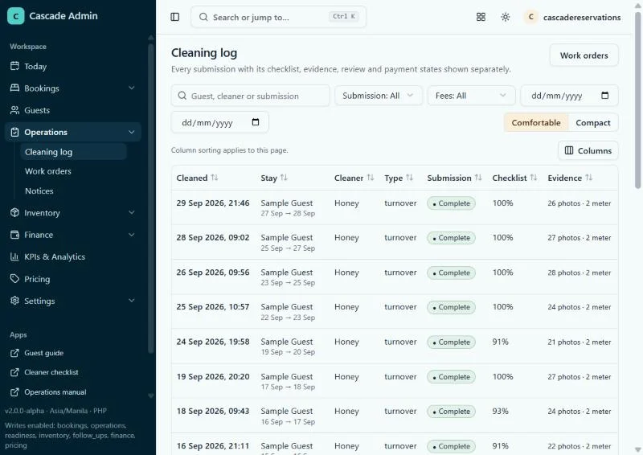
Search, Submission (Complete, Incomplete, With issues), From and To dates. Fees (Unpaid) is for the owner and Admin.Complete or incomplete, and the percent of checklist done.How many photos and meter photos came with the report.The cleaner fee and whether it was paid. Hidden from cleaners.The Cleaning log.
FiltersSearch, Submission (Complete, Incomplete, With issues), From and To dates. Fees (Unpaid) is for the owner and Admin.Who: Everyone
Submission and ChecklistComplete or incomplete, and the percent of checklist done.Who: Everyone
EvidenceHow many photos and meter photos came with the report.Who: Everyone
Fee and PaidThe cleaner fee and whether it was paid. Hidden from cleaners.Who: Owner, Admin
Operations: Cleaning report
Open a report to see the States, Meters, Photos, Checklist and Verification evidence (advisory) cards. Tap a photo to see it full size in a new tab. Urgent notes show in red.
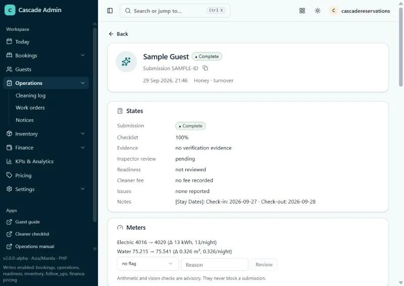
Electric and water: before, after, difference and per night.Flags a wrong reading. It never edits the numbers.Records that you looked at the evidence.Ready for arrival, Not ready, or Override. This sets the badge on Today.A cleaning report.
MetersElectric and water: before, after, difference and per night.Who: Everyone
Meter flag and ReviewFlags a wrong reading. It never edits the numbers.Who: Owner, AdminCan undo
Mark reviewed and Needs follow-upRecords that you looked at the evidence.Who: Owner, AdminCannot undo
Readiness decisionReady for arrival, Not ready, or Override. This sets the badge on Today.Who: Owner, AdminCannot undo
Control
Who
What it does
Badge
Meter flag + reason + Review
OwnerAdmin
Marks a reading as first reading, re entry, misread, duplicate or under review. Flagged readings are left out of the utilities charts.
Can undo
Mark reviewed / Needs follow-up
OwnerAdmin
Records your review of the photos and checks.
No Undo toast. Shown in history.
Outcome + Record for a date
OwnerAdmin
Sets Today's property readiness to ready or not ready.
No Undo toast. Shown in history.
Operations: Work orders
OwnerAdmin create and change. Everyone can read. A work order is a maintenance job. One marked Blocks the next arrival holds the unit from being ready.
Tap New work order.
Fill Title (3 letters or more), Description, Priority, Status and Due.
Tick Blocks the next arrival if the next guest cannot stay until it is fixed.
Tap Save. Can undo
When you set the status to resolved, the Resolution (required) box appears. To remove one, open it, use the red Delete (cancel) this work order box with a reason. The list shows only open jobs unless you change Status. Urgent cleaner notes also arrive here as work orders. See Telegram: the two groups.
Operations: Notices
OwnerAdmin create and change. A notice is a short warning with a type (power, water, maintenance, weather, general), an audience and an end time. Active ones show on Today.
Tap New notice.
Fill Title, Description, Type, Audience, Effective date and Expires.
Keep Active ticked. Tap Save. Can undo
A notice turns expired when its time passes or you untick Active. To remove one, use Delete (deactivate) this notice with a reason.
Inventory: Stock
OwnerAdminCleaner to look. Only the owner and Admin can receive or adjust stock. Shows what is on hand and what is running low.
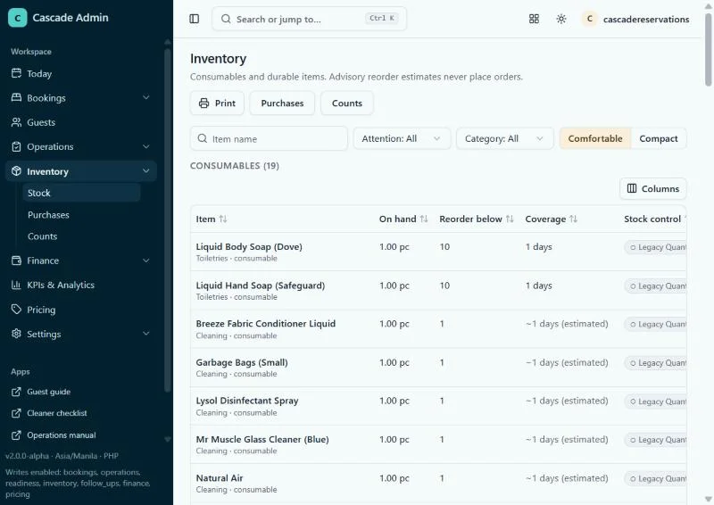
Header buttons. Print opens the Print inventory sheet: tick Consumables, Appliances & utensils or Stores (or Select all), then Print opens your browser print box.Low stock, Out of stock, Inactive, Attention required.On hand, Reorder below, Coverage in days and State. Tap a row to open the item.Two forms inside an item sheet. Both change real stock.Stock, with three tables.
Print, Purchases, CountsHeader buttons. Print opens the Print inventory sheet: tick Consumables, Appliances & utensils or Stores (or Select all), then Print opens your browser print box.Who: Print and Purchases: everyone. Counts: Owner, Admin
Attention filterLow stock, Out of stock, Inactive, Attention required.Who: Everyone
Consumables tableOn hand, Reorder below, Coverage in days and State. Tap a row to open the item.Who: Everyone
Receive stock and AdjustTwo forms inside an item sheet. Both change real stock.Who: Owner, AdminCan undo
Receive stock
Tap the item to open its sheet.
In Receive stock fill Packs, Cost per pack (PHP), Supplier and Date.
Tap Record receipt once.
Read Received and the number. Note: the expense is not posted to Finance. Record the expense there separately.
Adjust a wrong quantity
Open the item. In Adjust (movement ledger only) type the Change (+/−) and a Reason.
Tap Record adjustment.
To take it back, tap Undo in the message within 8 seconds.
If the button says Needs a baseline count first, do a count on the Counts page first. An empty movement history is not zero stock.
Inventory: Purchases
The shopping list: propose, approve, receive. Then record the money in Finance.
Button
Who
What it does
Add (Propose an item)
Everyone sees the form
Puts an item on the list as proposed.
Approve, Reject, Cancel
OwnerAdmin
Changes the status of a list line. Can undo
Receive then Record receipt
OwnerAdmin
Adds the goods to stock and to Recorded purchases. Press once.
Inventory: Counts
OwnerAdmin A count sheet. Each row has Recorded, Counted, a live Variance, a Note (where you counted, 3 letters or more) and Confirm. Nothing is saved until you press Confirm on that row.
Finance: Review queue
OwnerAdmin Money waiting for a human decision. Everything here touches money.
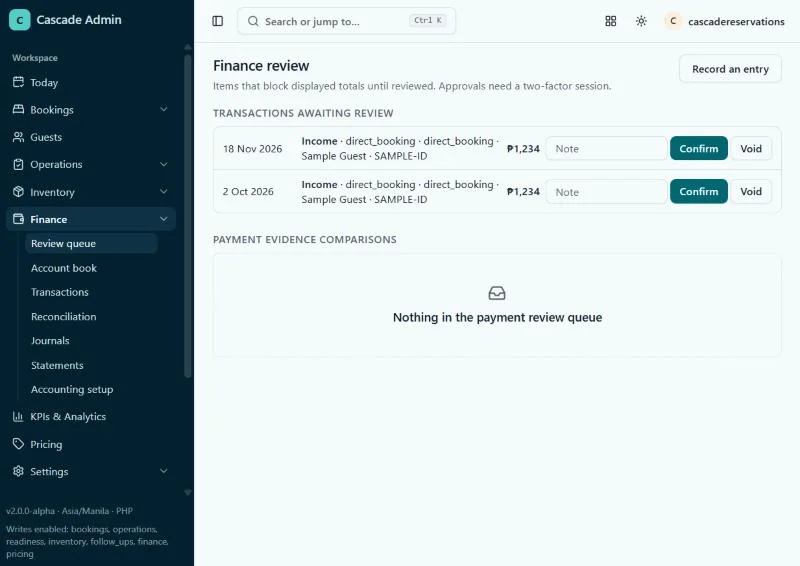
Receipts and Airbnb candidates waiting. Each row has a Note box, Confirm and Void.Guest payments compared with the expected amount. Each row has a Reason box, Approve and Reject.The review queue.
Transactions awaiting reviewReceipts and Airbnb candidates waiting. Each row has a Note box, Confirm and Void.Who: Owner, AdminCannot undo
Payment evidence comparisonsGuest payments compared with the expected amount. Each row has a Reason box, Approve and Reject.Who: Owner, AdminCannot undo
Button
What it does
Badge
Approve (payment evidence)
Says the guest's payment is good. It lets you confirm the booking on Inquiries.
Posts money at once
Reject (payment evidence)
Says the payment is not good. It lets you decline the booking.
Posts money at once
Confirm (transaction)
Makes the receipt a confirmed entry in the money list.
What the guest does on the booking site, what the office does with the payment, and every message the system sends until the thank-you.
A direct booking has two halves. The guest asks for the dates and sends proof of payment. Then the office checks the money and confirms. After that the system sends the guest their messages by itself, except the door code, which you send.
One direct booking, from the guest's request to the thank-you message.
The guest uses the public booking site. You can walk through the same screens on your own phone. Do not send a real request to test it.
1. Pick the dates
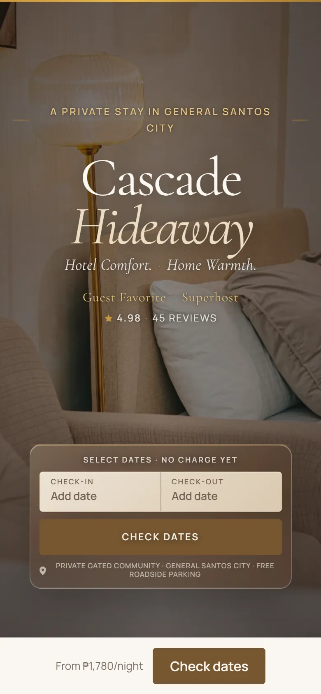
At the top of the page the guest taps Check-in and Check-out and chooses dates on the small calendar. Then they tap Check dates. The page shows if the dates are free. The calendar is the live calendar, so taken nights cannot be picked.
The stay is 1 night or more. Longer stays get a discount that shows as the guest picks dates: 5% from 2 nights, 10% from 7 nights, 25% from 28 nights.
2. Step 1: Dates & Details
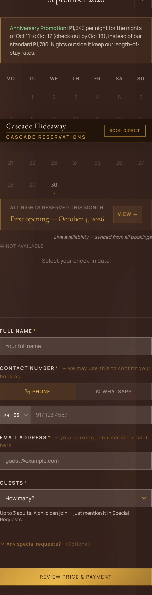
The guest fills in Full Name, Contact Number (Phone or WhatsApp), Email Address and Guests (1 to 3 adults). There is an optional Special Requests box for early check-in, a child, or an occasion. All the other boxes are required.
Then they tap Review price & payment.
3. Step 2: Review & Pay
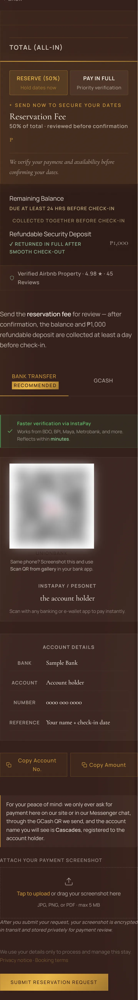
The guest sees the price, then chooses how much to pay now:
Reserve (50%) holds the dates now. It is a reservation fee of half the total. It is offered only when check-in is 5 days away or more.
Pay in Full pays everything. When check-in is less than 5 days away, this is the only choice. There is no 50% reservation.
They then pick Bank Transfer or GCash. The page shows the payment details and buttons to copy the account number and the amount.
4. Attach the receipt
The guest sends the money in their own banking app, then taps Tap to upload under Attach Your Payment Screenshot. It accepts JPG, PNG or PDF up to 5 MB. Then they tap Submit reservation request. (After a late-booking notice, the button reads I've sent the payment.)
5. The success message
A box says Reservation request received, with a reference such as DIR-SAMPLE. It says the dates are not confirmed until a personal confirmation arrives. It also says the balance and the deposit are collected at least a day before check-in.
What the guest pays, and when
Amount
When
Notes
Reservation fee (50% of the total)
With the request
The guest can pay the full amount instead. When check-in is less than 5 days away, only full payment is offered. The fee is refunded when the guest cancels 5 or more days before check-in. Under 5 days, it is kept.
Balance (the other 50%)
At least one day before check-in
Collected together with the deposit.
Security deposit: PHP 1,000
At least one day before check-in, with the balance
Returned after the check-out check finds no problem.
Check-in is at 2:00 PM. Check-out is at 12:00 noon. The booking site is always the source for these words. See Policies and glossary.
Part 2: What the office does
When the guest submits, two cards appear in the Finance group in Telegram. The first says a request came in and the dates are on hold. The second, a few moments later, holds the receipt photo.
🏠 NEW BOOKING · Direct DIR-SAMPLE · HOLD Sample Guest · guest@example.com · 0917 000 0000 2 nights · 2 guests · dates held for 24 hours Do: wait for the receipt card, then tap Confirm there.
You tap: 💰 Log expense. Who can tap it: Anyone in the group.
Opens the list of expense categories so you can log an expense. It has nothing to do with this booking.
You tap: 🧾 Records. Who can tap it: Anyone in the group.
Opens the purchases page in the dashboard. Nothing changes.
🧾 FINANCE · receipt DIR-SAMPLE Sample Guest · GCash · read by the system: PHP 1,500 · confidence high Do: check the money is really in the GCash or bank app, then tap Confirm booking or Decline.
You tap: ✅ Confirm booking. Who can tap it: Mapped staff.
Careful: Confirms the booking and sends the guest a message. There is no Undo in Telegram.
The booking is confirmed. The calendar is updated, the guest is e-mailed, the confirmation message is sent, and the OPS group gets a card that says CONFIRMED. If someone else already decided, you see Already reviewed. If the dates were taken in the meantime, you see NOT confirmed.
You tap: ❌ Decline. Who can tap it: Mapped staff.
Careful: Cancels the request and tells the guest. There is no Undo in Telegram.
The request is cancelled. The money row is voided and a guest who wrote in Messenger is told. The dates are freed.
Confirm or decline a payment
Open the receipt card in the Finance group.
Read what the system read from the photo: amount, channel, reference. Read any warning such as SHORT.
Open your GCash or bank app. Check the money is really there. The photo alone is not proof.
Tap Confirm booking if the money is there. Tap Decline if it is not.
Read the answer on the card.
The same job in the dashboard
You can decide the same booking in the dashboard instead. Use it when you are at a computer or the Telegram tap is refused.
Open Finance > Review queue. Find the payment under Payment evidence comparisons.
Type a Reason. Tap Approve (or Reject).
Open Bookings > Inquiries. Tap Confirm (or Decline) on the card, then Confirm in the window.
Read the message Confirmed and the guest name.
A receipt that is late
If a receipt sits for 2 to 3 hours with nobody deciding, one more card appears: ATTENTION · receipt waiting. It says: scroll up to the receipt card and tap Confirm booking or Decline. It is posted once.
Holds: 24 hours to pay
A hold keeps the dates for the guest while you check the payment. If the guest has not paid 24 hours after asking, the system releases the hold by itself. It runs every hour. It frees the calendar dates, voids the money row, and posts this card.
🟡 ATTENTION · hold expired DIR-SAMPLE Sample Guest · no payment in 24 hours. The dates are free again. 📨 Hello Sample Guest, we have not received your payment yet, so we released the dates. If you still want to stay, tell us and we will check them again.
You tap: 📄 Show as text. Who can tap it: Anyone in the group.
Posts the message alone in a box. Press and hold it to copy. It copies nothing by itself and sends nothing to the guest.
You tap: ✏️ Revise. Who can tap it: Anyone in the group.
Asks Cassy to write a warmer or shorter version. She only replies with a draft. Nothing is sent to the guest.
If a guest cancels
Use Cancel booking on the booking page in the dashboard. See Booking detail. The guest gets a message from the system and the dates are freed.
No refund is made by that button. The owner or Marifel handles a refund by hand. The rule: 5 or more days before check-in the reservation fee is refunded. Under 5 days it is kept.
Airbnb bookings follow Airbnb's own cancellation rules.
Airbnb bookings
Airbnb bookings need no typing. Two things bring them in: the system reads the e-mails Airbnb sends, and it copies the Airbnb calendar every 15 minutes.
Card you may see
Group
What it means
🏠 NEW BOOKING · Airbnb code
OPS and Finance
A new Airbnb stay. For a returning guest it shows their history and a welcome-back text.
🧾 FINANCE · Airbnb payout
Finance
Airbnb paid out. Shows the total.
🟡 ATTENTION · cancelled code
OPS
The stay was cancelled. The dates are open again.
🟡 ATTENTION · blocked date
Finance
Airbnb shows a block with no booking behind it. Tap Maintenance or owner use, A direct booking - I will add it or Unblock it on Airbnb. The last one only records what you want. You still unblock on Airbnb yourself.
Messages the system sends by itself
After you confirm a direct booking, the system sends these messages. All times are Manila time. Each message goes out once per booking. It goes on Messenger if the guest wrote to the page in the last 23 hours, otherwise by e-mail. If it cannot send, the card in the OPS group says so, and you send it yourself.
Message
When it goes
What it says, in plain words
1. Confirmation
Right after you confirm. If you confirmed in the dashboard, at the next hourly run.
Your stay is confirmed.
2. Arrival details and balance
2 days before check-in, between 15:00 and 21:00. Skipped if the booking was confirmed less than 2 days before check-in.
How to arrive, and the balance and deposit due.
3. Door code
Never sent by the system. A card comes to Finance when the guest ID is on file and check-in is today to 7 days away.
You send it. See below.
4. Mid-stay refresh
Stays of 5 nights or more, about day 4 of the stay (day 3 for 5 or 6 nights), between 15:00 and 21:00.
A check-in on how the stay is going.
5.1 Check-out reminder
Check-out day, between 09:00 and 12:00.
Check-out is at 12:00 noon. Lights and aircon off, key card with the remotes on the tray.
5.2 Thank-you and reviews
Check-out day, between 16:00 and 22:00. Held back if the guest made a complaint or a safety report, or a work order is open.
Thank you, and how to leave a review.
Every message also posts a card in the OPS group so staff can see it. Tap Show as text to see the exact words. Revise asks Cassy for a different version. If a complaint is open, the card says: not sent, please write personally. Then write to the guest yourself.
The door code
🔑 DOOR CODE READY TO SEND · DIR-SAMPLE Sample Guest · check-in soon · ID on file Deposit and balance: received (sample) 📨 Hello Sample Guest, your door code for your stay is [door code]. Please keep it private.
You tap: 📄 Show as text. Who can tap it: Anyone in the group.
Posts the message alone in a box. It has a marked spot where the code goes. Copy the text, type the new code into the marked spot, then send it to the guest yourself. Nothing is sent by the button.
Wait for the DOOR CODE READY TO SEND card.
Check the card says the deposit and balance are received. If it shows a warning, ask the owner before you go on.
Set a new code for this guest in the lock app.
Tap Show as text. Copy the text. Put the new code in the marked spot.
Send it to the guest yourself, on Messenger or by e-mail.
Telegram - the two groups, the buttons and the cards
Which group is for what, who may tap what, every command, and a tap-through replica of every card the bot sends.
Cascade talks to its team in Telegram. One bot posts cards in two groups. A card tells you what happened and the one thing to do. This chapter shows every card and every button, so you know what a tap does before you tap it.
The two groups
The bot knows the two groups apart and ignores every other chat. Use the right group for the right job.
Brownout, Calendar, Weather now, Turnover, Stock check, Full inventory, Ask Cassy, Draft a reply, View all notices
Who may tap what
There are three levels. The bot checks the level when you tap.
Anyone in the group. Expense confirm and cancel, receipt confirm, edit and discard, mark a cleaning fee paid, save a notice, menu buttons, Show as text, Revise, save a brownout. There is no identity check.
Mapped staff only.Confirm booking and Decline, Apply on a stock count, and the answers on a blocked-date card. Mapped staff means your Telegram account is linked to your staff profile.
Commands that work in both groups
A command starts with /. You can also tap the same action from the menu.
Command
What it does
Changes anything?
/menu (also /help, /start)
Opens the button menu for the group you are in.
No
/keyboard (also /buttons)
Adds a permanent button grid above the message box. Use the small keyboard symbol to show or hide it.
No
/stock
Low-stock list. /stock all shows everything. Finance also sees unit cost.
No
/inventory
Full stock report, low items first.
No
/notices
The next 15 active notices: brownouts, holidays, events, reminders.
No
/brownout, /holiday, /event, /reminder
Adds a notice to the board. Optional date word (today, tomorrow, 2026-10-03, 10-03). A brownout also takes a start time (8am, 13:30) and hours (4h). The rest is the title.
Saves at once No confirm card on this route.
/count
Finance: starts a stock count. OPS: only says counts are updated from Finance.
Write down the Ref. If the row is wrong, give the Ref to Lloyd.
Fast way - the bot may ask first
If the same amount and category was logged today, or the amount is PHP 10,000 or more, the bot asks before it saves.
⚠️ Possible duplicate detected PHP 250 · Supplies · Puregold Do: tap Yes only if this is a different purchase.
You tap: ✅ Yes, it's a new entry. Who can tap it: Anyone in the group.
The expense is saved to the ledger. If it was a mistake, tell Lloyd. Lloyd can undo
You tap: ❌ Cancel. Who can tap it: Anyone in the group.
Nothing is saved. The card closes. Nothing to undo
Photo way - send the receipt
Send a photo of the receipt into the Finance group. The bot reads the shop, date, items and total. It posts a review card. Nothing is in the ledger yet.
🧾 Receipt - pending review Sample Store · 30 Sep Items: 3 · Total PHP 1,706 · Confidence: high
You tap: ✅ Confirm P1,706. Who can tap it: Anyone in the group.
The receipt is marked confirmed and added to the ledger. The bot may then ask to update stock. You cannot undo it in Telegram. If it is wrong, tell Lloyd. Lloyd can undo
You tap: ❌ Discard. Who can tap it: Anyone in the group.
The receipt is voided and nothing is added. Nothing to undo
Photo way - fix anything wrong first
If the total or an item is wrong, fix it on the card before you confirm. Edits are free and the card redraws each time. See the full receipt card in the stock and expenses section below.
Update the stock if asked
If the items match things you keep in stock, the bot asks "Update inventory?". Tap Update stock to add the bought quantities. Tap Skip to leave stock alone. You can always fix stock later with /count.
Stock counts
In Finance, type /count. Pick a group: Consumables, Stores or All groups.
The bot posts a card with one button per item. Each button shows the system quantity.
Tap an item. The bot asks for the new count. Type just the number, like 20. Type 0 if none is left.
Changed items show as 3 - Item - 5 -> 2 on the card. You can also reply with lines like 2 20 and 7 0 to set many at once.
Tap Apply to save. Only mapped staff can. Nothing is saved before that.
Every card, and what its buttons do
Below is a replica of every card the bot posts. The data is made up. Tap a button to read what really happens. Nothing is sent from this page.
The first line of a card starts with an emoji that tells you how serious it is:
🟢 DAILY - a normal report.
🟡 ATTENTION - something needs a look.
🔴 ALERT - act now.
🏠 NEW BOOKING, 💬 GUEST, 🧹 CLEANING, 🧾 FINANCE, 📋 WEEKLY - the topic.
Most cards end with a Do: line. That is the one thing to do. A card that says Do: send ... this carries the ready text on a line that starts with 📨.
Menu cards and buttons that appear on many cards
🏠 Cascade Finance Choose what you want to do.
You tap: Log Expense. Who can tap it: Anyone in the group.
Opens a sub-menu: Guided /log, Fast entry, Receipt OCR. The last two are help cards. Nothing is saved.
You tap: Cleaning Fees. Who can tap it: Anyone in the group.
Opens a sub-menu: Mark paid, Manual entry, OPS ack card. These run /payclean, /manualclean and /notifyclean.
You tap: Reports. Who can tap it: Anyone in the group.
Opens a sub-menu: Summary.
You tap: OPS Notices. Who can tap it: Anyone in the group.
Opens a sub-menu: Brownout, Calendar, All notices, Weather, Turnover.
You tap: Inventory. Who can tap it: Anyone in the group.
Opens a sub-menu: Low stock, Full list, Update counts, Purchase receipt, and a link to the dashboard.
You tap: Cassy. Who can tap it: Anyone in the group.
Opens a sub-menu: How to ask, and Draft a guest reply. Both are help cards.
📌 Cascade OPS Choose what you want to do.
You tap: Brownout. Who can tap it: Anyone in the group.
Lists the upcoming brownout notices. It adds nothing. To add one, type /brownout.
You tap: Calendar. Who can tap it: Anyone in the group.
Lists upcoming holidays, events and reminders. There is no typed /calendar command.
You tap: Weather now. Who can tap it: Anyone in the group.
Posts the weather now. There is no typed /weather command.
You tap: Turnover. Who can tap it: Anyone in the group.
Posts the turnover schedule: arrivals and departures for today and the next two days. There is no typed /turnover command.
You tap: Stock check. Who can tap it: Anyone in the group.
Shows the low-stock list.
You tap: Full inventory. Who can tap it: Anyone in the group.
Posts the full stock report, low items first.
You tap: Ask Cassy. Who can tap it: Anyone in the group.
The bot asks you to reply with your question. Your reply goes to Cassy.
You tap: Draft a reply. Who can tap it: Anyone in the group.
The bot asks for the guest's message or a screenshot. It then drafts a reply for you to copy. Nothing is sent.
You tap: View all notices. Who can tap it: Anyone in the group.
Shows the next 15 active notices.
💬 GUEST · welcome back Sample Guest · CH-SAMPLE 📨 Welcome back, Sample Guest. We are glad to host you again.
You tap: 📄 Show as text. Who can tap it: Anyone in the group.
The bot posts the 📨 text alone in one message so you can long-press it and copy it. It copies nothing by itself and sends nothing to the guest. Harmless
You tap: ✏️ Revise. Who can tap it: Anyone in the group.
Cassy rewrites the text to be warmer or shorter, with the same facts. She posts it as a "Revised draft". Nothing is sent to anyone. Harmless
🟢 DAILY · low stock 📦 Out of stock: 1 item
You tap: 📦 Inventory. Who can tap it: Anyone in the group.
Posts the full stock report, low items first. Harmless
🧾 FINANCE · money card Do: log any cost that goes with this.
You tap: 💰 Log expense. Who can tap it: Anyone in the group.
Opens the category picker. Nothing is saved until you finish the steps. Cancel any time
You tap: 🧾 Records. Who can tap it: Anyone in the group.
Opens the records page in the dashboard. Harmless
🔢 Question from the bot Type the amount, and the shop if you like: 1706 or 1706 Lazada
You tap: ❌ Cancel. Who can tap it: Only the person who was asked.
The question closes: "Cancelled. Nothing saved." Only the person who was asked can cancel. Nothing to undo
Bookings and payments
🏠 NEW BOOKING · Direct DIR-SAMPLE · HOLD Sample Guest · 0917 000 0000 · guest@example.com Dates held for 24 hours. Do: wait for the receipt card, then tap Confirm there.
You tap: 💰 Log expense. Who can tap it: Anyone in the group.
Opens the category picker. Nothing is saved until you finish the steps.
You tap: 🧾 Records. Who can tap it: Anyone in the group.
Opens the records page in the dashboard.
🧾 FINANCE · receipt DIR-SAMPLE (photo of the payment proof) The AI read: amount, channel, reference, confidence. Do: check the money is really in GCash or Maya before you tap Confirm.
You tap: ✅ Confirm booking. Who can tap it: Mapped staff.
Careful: Confirms the booking and messages the guest. Check the money first.
The booking is confirmed and the calendar is updated. The guest is e-mailed and gets the confirmation message. OPS gets a "CONFIRMED" card. A second person who taps sees "Already reviewed". If the dates were taken in the meantime you see "NOT confirmed". An unmapped person sees "not authorized to approve payments" and the buttons stay. You cannot undo this in Telegram
You tap: ❌ Decline. Who can tap it: Mapped staff.
Careful: Cancels the request and tells the guest.
The request is cancelled, the ledger row is voided and a Messenger guest is told. You cannot undo this in Telegram
🟡 ATTENTION · receipt waiting DIR-SAMPLE A receipt has waited 2 to 3 hours. Do: scroll up to the receipt card and tap Confirm or Decline.
🟡 ATTENTION · hold expired DIR-SAMPLE The request was unpaid after 24 hours. The dates are released. 📨 Hi Sample Guest, we released the held dates because we did not receive the payment. You are welcome to book again. Do: send the guest this line.
You tap: 📄 Show as text. Who can tap it: Anyone in the group.
Posts the 📨 line alone so you can copy it. Nothing is sent. The hold itself is already released: the calendar block is cancelled and the ledger row is voided.
You tap: ✏️ Revise. Who can tap it: Anyone in the group.
Cassy rewrites the line, same facts. Nothing is sent.
🟡 ATTENTION · 2 payments overdue Airbnb payout not received 2 or more days after check-in. Direct reservation fee with no receipt for 1 or more days.
🏠 NEW BOOKING · Airbnb CH-SAMPLE Sample Guest · 2nd stay · last stay: check the issue is fixed 📨 Welcome back text ready. (In Finance the same card also shows a Host earns line: what Airbnb will pay out.)
You tap: 📄 Show as text. Who can tap it: Anyone in the group.
Posts the welcome-back text alone so you can copy it. Nothing is sent.
You tap: ✏️ Revise. Who can tap it: Anyone in the group.
Cassy rewrites the text, same facts. Nothing is sent.
🧾 FINANCE · Airbnb payout Total and split per guest.
You tap: 💰 Log expense. Who can tap it: Anyone in the group.
Opens the category picker. Nothing is saved until you finish the steps.
You tap: 🧾 Records. Who can tap it: Anyone in the group.
Opens the records page in the dashboard.
🟡 ATTENTION · cancelled CH-SAMPLE The dates are open again.
📅 New Airbnb Booking Confirmed A new confirmed stay appeared in the Airbnb calendar. The payout is matched later from the monthly earnings file.
🧹 Calendar reconciliation More than one Airbnb calendar entry disappeared at once and was marked cancelled. Worth a look.
🟡 ATTENTION · blocked date Oct 5 to Oct 8 is blocked on Airbnb and Cascade has no booking for it. What is it?
You tap: Maintenance or owner use. Who can tap it: Mapped staff.
The answer is recorded. Nothing else changes.
You tap: A direct booking - I will add it. Who can tap it: Mapped staff.
The answer is recorded. Add the direct booking yourself in the dashboard.
You tap: Unblock it on Airbnb. Who can tap it: Mapped staff.
Careful: Only records your wish. You must unblock it on Airbnb yourself.
The answer is recorded. This does not unblock anything. Open Airbnb and unblock the dates yourself. An unanswered card becomes a Follow-ups task after a week.
Cleaning
🧹 CLEANING · report 2026-09-29 Meter readings and change, completion 100%, issues flagged: none.
🧹 CLEANING · work order Issue: aircon remote missing. Next guest: today. Blocks arrival: no. 📨 Suggested guest reply is ready.
You tap: 📄 Show as text. Who can tap it: Anyone in the group.
Posts the suggested guest reply alone so you can copy it. Nothing is sent. Close the work order in the dashboard when it is done.
You tap: ✏️ Revise. Who can tap it: Anyone in the group.
Cassy rewrites the reply, same facts. Nothing is sent.
🧾 FINANCE · cleaning fee 2026-09-29 Cleaning complete. Fee due. Do: send /payclean to issue the payment card.
🟡 ATTENTION · cleaning incomplete 2026-09-29 Missing: 2 items. No fee card until this is resolved.
🧾 Cleaning Expense Claims The cleaner listed extra expenses. No ledger entry was created. Finance reviews them.
⚡💧 Utility Anomaly Detected Power or water per night is over twice the 90-day average. Do: check the meter photos, a leak, or an aircon left on.
🧹 Pay Cleaning Fees Tap a clean you have already paid for.
You tap: Honey · 29 Sep. Who can tap it: Anyone in the group.
Selects that clean and shows the payment card. Nothing is booked yet.
You tap: ✅ Mark Paid P500. Who can tap it: Anyone in the group.
The cleaner fee is booked to the ledger and the clean is stamped paid. The bot says to run /notifyclean to send the acknowledgement card. Posts money. Not undoable in Telegram
You tap: ✏️ Edit amount. Who can tap it: Anyone in the group.
The bot asks for a new amount. Type just the number. Nothing is booked until you confirm.
You tap: ❌ Cancel. Who can tap it: Anyone in the group.
Closes the card. Nothing saved.
🧹 Cleaning Fees Settled Honey · fees paid.
You tap: ✅ Acknowledge Payment. Who can tap it: Anyone in the group.
Every paid clean of that cleaner is stamped as acknowledged. The card ends with "Acknowledged by (your name) at (time)". It cannot be undone from Telegram.
🧹 Payment Ready - Honey A cleaning invoice was sent from the dashboard.
You tap: ✅ Received Payment. Who can tap it: Anyone in the group.
Careful: Posts the cleaner fee to the ledger at once, for whoever taps it.
The cleaner fee is booked to the ledger and marked acknowledged. The card shows "Received - confirmed by (name) at (time)". Anyone in OPS can tap it, so a mistaken tap posts money. Only tap it when you are the cleaner and you have the money. Posts money at once
🔴 ALERT · missed cleaning 1d The cleaning report for the last check-out is missing. Day 1 alert, a last reminder on day 3, then a Follow-ups task in the dashboard.
🟡 ATTENTION · turnover check 2026-09-29 Problem: fewer than 5 photos. Also checked: meter reading, kWh per night, checklist.
🔴 ALERT · turnover unresolved 2026-09-28 Checked out 2 or more days ago and still open. Sent once, then a Follow-ups task.
🚩 Meter photo is not a meter Also: "disagrees with the reading" and "could not be read". A re-upload is asked at the cleaner's next sign-in.
Stock and expenses
🧾 Log an Expense Select a category. (Or: Detected P250 - select a category.)
You tap: Supplies. Who can tap it: Anyone in the group.
Shows the category, then asks for the amount and the shop. Use Cancel on the question if you change your mind.
You tap: Utilities. Who can tap it: Anyone in the group.
Shows the category, then asks for the amount and the shop.
You tap: Cleaning. Who can tap it: Anyone in the group.
Shows the category, then asks for the amount and the shop.
You tap: Maintenance. Who can tap it: Anyone in the group.
Shows the category, then asks for the amount and the shop.
You tap: Repairs. Who can tap it: Anyone in the group.
Shows the category, then asks for the amount and the shop.
You tap: Platform Fees. Who can tap it: Anyone in the group.
Shows the category, then asks for the amount and the shop.
You tap: Other. Who can tap it: Anyone in the group.
Shows the category, then asks for the amount and the shop.
⚠️ Similar recent entry Same amount and category today, or the same amount of PHP 500 or more in the last 7 days.
You tap: ✅ Yes, it's a new entry. Who can tap it: Anyone in the group.
The expense is written to the ledger. If it was a mistake, tell Lloyd. Lloyd can undo
You tap: ❌ Cancel. Who can tap it: Anyone in the group.
Nothing is saved. Nothing to undo
💰 Large expense: P10,000 Any amount of PHP 10,000 or more asks first.
You tap: ✅ Confirm. Who can tap it: Anyone in the group.
The expense is written to the ledger. If it was a mistake, tell Lloyd. Lloyd can undo
You tap: ❌ Cancel. Who can tap it: Anyone in the group.
🧾 Receipt - pending review Sample Store · 30 Sep · Total PHP 1,706 · Confidence: medium
You tap: ✅ Confirm P1,706. Who can tap it: Anyone in the group.
The receipt is marked confirmed and added to the ledger. Not undoable in Telegram. If it is wrong, tell Lloyd. Posts money
You tap: 💵 Enter total. Who can tap it: Anyone in the group.
Used when the AI was not sure of the total. You type the total and the card redraws. Free to redo. Can undo
You tap: ✏️ Edit item. Who can tap it: Anyone in the group.
Pick an item and type the fix. The card redraws. Nothing is saved yet. Can undo
You tap: ➕ Add item. Who can tap it: Anyone in the group.
Adds a line the AI missed. The card redraws. Can undo
You tap: 🗑️ Remove item. Who can tap it: Anyone in the group.
Pick an item to take off. The card redraws. Can undo
You tap: 💵 Edit total. Who can tap it: Anyone in the group.
You type the right total. The card redraws. Can undo
You tap: ❌ Discard. Who can tap it: Anyone in the group.
The receipt is voided. Nothing is added. Not undoable in Telegram. Send the photo again if you discarded by mistake.
⚠️ Receipt already logged This photo was seen before.
You tap: ✅ Different receipt - process it. Who can tap it: Anyone in the group.
The bot reads the photo anyway and posts a new review card.
You tap: ❌ Already logged - skip. Who can tap it: Anyone in the group.
The photo is skipped. Nothing new is saved.
📦 Update inventory? The receipt items match tracked stock.
You tap: ✅ Update stock. Who can tap it: Anyone in the group.
Adds the bought quantities to stock, with their cost. Fix it later with /count if it is wrong. Fix with a new count
You tap: ⏭️ Skip. Who can tap it: Anyone in the group.
Stock is left alone.
📦 Update counts - which group?
You tap: 1 Consumables (12). Who can tap it: Anyone in the group.
Posts the count card for consumables.
You tap: 2 Stores (8). Who can tap it: Anyone in the group.
Posts the count card for stores.
You tap: 3 All groups (20). Who can tap it: Anyone in the group.
Posts the count card for every group.
📦 Count - Consumables - 12 items Tap an item to change its count. The card lives for 1 hour. ✏️ 3 - Bath towels - 5 -> 2
You tap: Bath towels (5). Who can tap it: Anyone in the group.
The bot asks "System has 5. Type the new count." Type a number, or 0 if none is left. Nothing is saved yet.
You tap: ✅ Apply 1 change. Who can tap it: Mapped staff.
Writes all the new quantities. Refused if the stock moved since the list was opened. Not undoable except by counting again. Saves at once
You tap: ❌ Cancel. Who can tap it: Anyone in the group.
Closes the card. Nothing saved.
🧾 Cassy card: PHP 250.00 Supplies - Puregold? Cassy heard a spend. Nothing is saved yet.
You tap: ✅ Log it. Who can tap it: Anyone in the group.
The expense is written to the ledger. If it was a mistake, tell Lloyd. Lloyd can undo
You tap: ❌ Cancel. Who can tap it: Anyone in the group.
Nothing is saved.
🧾 Receipt read - pending review Confirm or correct it in the finance dashboard.
Daily and weekly reports
🟢 DAILY · Wed 30 Sep 📥 Arriving today: 1 📤 Departing: 1 🛎 Mid-stay: night 2 of 3 📦 Out of stock: 1 🪪 ID still missing: 1 🌤 Weather 📆 Tomorrow 📨 A mid-stay check-in text is ready.
You tap: 📄 Show as text. Who can tap it: Anyone in the group.
Posts the mid-stay text alone so you can copy it. Nothing is sent.
You tap: ✏️ Revise. Who can tap it: Anyone in the group.
Cassy rewrites the text. Nothing is sent.
You tap: 📦 Inventory. Who can tap it: Anyone in the group.
Posts the full stock report.
📋 WEEKLY · week of Mon 28 Sep This week's arrivals · low stock · open work orders Handed to you this week: 3 access, 1 payment Still waiting over a day: Sample Guest (access, 2 days)
You tap: 📦 Inventory. Who can tap it: Anyone in the group.
Posts the full stock report. The card arrives on Mondays at 08:00, before the daily card.
📋 WEEKLY · week of Mon 28 Sep Receipts awaiting review · bookings decided this week and who confirmed them · overdue payouts (max 2)
You tap: 💰 Log expense. Who can tap it: Anyone in the group.
Opens the category picker. Nothing is saved yet.
You tap: 🧾 Records. Who can tap it: Anyone in the group.
Opens the records page in the dashboard.
System alerts
🟡 ATTENTION · rain 2:00 PM - 3:00 PM Rain is likely at 70% or more, and a guest arrives or leaves today. Do: take an umbrella, warn the arriving guest, tell the cleaner.
🟡 ATTENTION · brownout Sat 3 Oct, 8:00 AM to 12:00 PM Power will be off at the house. Do: charge the EcoFlow and keep the emergency light ready. Guests are told only if they ask.
📸 Is this a power advisory to scan?
You tap: ⚡ Scan advisory. Who can tap it: Anyone in the group.
The poster is read and a result card follows. Nothing is saved yet.
You tap: ❌ Ignore. Who can tap it: Anyone in the group.
You tap: ✅ Save 2 brownout notices. Who can tap it: Anyone in the group.
Careful: Writes one brownout notice per window at once.
One brownout notice is written for each window. It shows in /notices and the 08:00 digest. No Telegram button removes it afterwards. Ask in the dashboard. If the poster does not list our feeder the button reads "Save anyway". Saves at once
You tap: ❌ Cancel. Who can tap it: Anyone in the group.
Nothing is saved.
🔴 ALERT · checklist error A cleaner's checklist hit an error. The same kind of card goes to Finance for a booking site error. Do: ask the person what they were doing and pass the card to Lloyd.
Guests
💬 GUEST · confirmation DIR-SAMPLE sent on Messenger. (Or "e-mailed to guest@example.com". Or "not sent (reason), please send it". Or "not sent: an open complaint, please write personally".) 📨 ⤵ Hi Sample Guest, your booking is confirmed.
You tap: 📄 Show as text. Who can tap it: Anyone in the group.
Posts everything under the 📨 line alone so you can copy it. Nothing is sent.
You tap: ✏️ Revise. Who can tap it: Anyone in the group.
Cassy rewrites the message. Nothing is sent. The same card also appears for pre-arrival, mid-stay, check-out reminder and after-departure messages.
🔑 DOOR CODE READY TO SEND · DIR-SAMPLE Deposit and balance received. Set a fresh code in the lock app, paste the text, and type the code where it says the placeholder.
You tap: 📄 Show as text. Who can tap it: Anyone in the group.
Posts the text alone so you can copy it. The system never sends the door code and the card never contains it. There is no Revise button on this card on purpose.
💬 GUEST · handoff #CH-SAMPLE Sample Guest wrote on Messenger: "Hi, is the 12th free?" The bot handed this to you. Two ready options are below.
You tap: Send option 1. Who can tap it: Anyone in the group.
Careful: Sends the text to the guest on Messenger.
The first ready text is sent to the guest on Messenger. You cannot unsend it. Read it first.
You tap: Send option 2. Who can tap it: Anyone in the group.
Careful: Sends the text to the guest on Messenger.
The second ready text is sent to the guest on Messenger. You cannot unsend it.
You tap: ✍️ Write my own. Who can tap it: Anyone in the group.
The bot waits for your reply to this card. Whatever you type as a reply is sent to that guest.
Cassy - your assistant in Telegram
How to ask Cassy, what she can read, what she refuses, and how she drafts guest replies.
Cassy is the team's assistant inside Telegram. You ask her a question and she looks it up. She helps you draft replies. She never sends anything to a guest, and she never changes anything until a person taps a button.
Where she works and how to ask
Where
What she can do there
Finance group
Bookings, guests, stock and money figures. She can also raise an expense card.
OPS group
The same, but money is removed from everything she reads. She never shows amounts, payouts, revenue, cost, price, fee or balance here.
A private chat
Only for a few approved accounts. It works like the Finance group. Any other chat gets nothing.
Ask her in any of these ways:
Start your message with her name: Cassy, who arrives this week? The words cassy or @cassy both work.
Or type /cassy and your question.
Or tap Ask Cassy (or Cassy) in the menu, then reply to the bot's message with your question.
Or mention the bot, or reply to one of its messages.
She answers in the language you used: English, Tagalog, Bisaya or Taglish.
Her answers have a fixed shape: one decision line, at most five short lines, one Do: action.
She remembers only the last few turns of the chat. A short follow-up like "and next week?" works. A long thread does not. Ask a full question if she seems lost.
What she can look up
These are all her read tools. She answers only from what a tool returns. If a tool has no data she says so. She does not guess.
She can look up
Example question
Arrivals, departures and guests in the house between two dates. Also the first free night, worked out by code.
Cassy, who arrives this week? / when is the unit next free?
Nights sold, nights available, occupancy and room revenue for a date range (default: this month so far).
occupancy this month?
Items at or below their reorder point, most urgent first.
what is low in stock?
Every consumable with its quantity and days of cover.
how many days of towels are left?
What we know about one guest: stays, last issue the cleaner logged, preferences, notes, open follow-ups.
tell me about Sample Guest
Every past and upcoming stay of one guest.
when did Sample Guest stay with us?
House how-tos: aircon, TV, Wi-Fi, door and key card, EcoFlow, outages, emergencies, check-out, turnover steps, supplier contacts. Staff see every level of fact.
cassy house wifi / how do I reset the water heater?
What she can start, and what needs your tap
She can prepare a few things. Each one only posts a card. Nothing is saved until a person taps a button on that card.
Log an expense. Finance only. When a Finance message says money was spent with an amount, she raises a confirm card.
Save a notice (brownout, holiday, event, reminder). OPS and Finance.
What she refuses or will not do
She never sends anything to a guest. Drafts are for you to copy. Each draft ends with "Nothing was sent."
She answers only from what her tools return. If a tool fails she says "I could not read" that thing and stops. She does not ask for access.
In OPS she never sees money. She also refuses to log an expense there. She says this can only be done in the Finance group.
She never says a card was sent when none was.
She cannot void or edit an expense, confirm or cancel a booking, refund a guest, change rates or open the door.
If the AI service is down she says "I could not reach the model. Try again in a minute."
Examples of good questions
Short, clear questions work best. Here is what a good exchange looks like. The left side is you. The right side is Cassy. The names, numbers and house details in these examples are made up.
Cassy, who arrives this week?
Two arrivals this week. Sample Guest checks in on Friday for 3 nights. One more arrives on Sunday. Do: check the ID is on file before Friday.
what is low in stock?
Two items are at or below their reorder point. Bath towels are the most urgent. - Bath towels: 4 left - Trash bags: 6 left Do: add both to the next shopping list.
cassy house aircon
The aircon remote is on the wooden tray on top of the TV cabinet, beside the flower vase. Guests are comfortable at 26 degrees, COOL, fan AUTO. After a clean, set it to 24 degrees before you leave. Do: tell the guest where the remote is.
what did we spend on cleaning supplies this month?
I cannot read expenses, so I cannot answer that. Do: send /summary in the Finance group.
Walkthrough - draft a reply to a guest
Use this when a guest wrote to the Facebook Page inbox or the Airbnb app and you want a good reply fast.
Start the draft
Pick one of these:
Type /draft and paste what the guest wrote.
Or type cassy reply: and paste the guest's message.
Or tap Guest reply and reply with the pasted text or a screenshot of the chat.
Or send a screenshot with the caption cassy draft.
You can add guest: Sample Guest to name the guest. Then Cassy also looks at their history.
What she does
From a screenshot she reads the chat, works out if it is Messenger or Airbnb, finds the guest's name, and takes the guest's newest messages after your last line.
For Messenger she asks the guest assistant to answer with no sending. The draft then uses the real calendar, the rate card and the house voice. If she cannot reach that assistant you still get a draft, marked "the concierge could not be reached, so dates are not checked". For Airbnb she drafts separately. She never adds links, phone numbers, e-mail or payment outside Airbnb.
Read the risk flag
She checks what kind of message it is. If it is anything but routine, the header shows a line starting with a warning sign. Follow the rule of thumb:
Payment claim - check Finance first.
Refund - use the 5-day rule and do not promise money.
Cancellation or date change - check the calendar.
Complaint - think about calling the guest.
Safety - call the guest now.
Access problem - check who they are first.
Policy exception - it is your decision.
Read the draft
✍️ Guest reply · Sample Guest · Messenger · availability ⚠️ The draft claims availability: check the calendar before sending. Nothing was sent. Long-press an option to copy it.
Hello Sample Guest, thank you for asking. Those dates look open on our calendar. Would you like us to hold them for you?
Option 1 is in its own message. Option 2, a shorter one, appears only when option 1 is long. Notes may say "the concierge would attach the GCash QR here: send it with the reply".
Copy it and send it yourself
Long-press the option to copy it. Paste it into the Facebook Page inbox or the Airbnb app and send it there. There is no send button on a draft. It is never sent automatically.
Brownout notices
A brownout is a planned power cut. There are four ways it gets onto the board. All four end the same way: it shows in /notices, in the 08:00 digest ("Prepare for the brownout ...") and in Cassy's answers.
How
Who
Does it ask first?
Type /brownout tomorrow 8am 4h and a title
Anyone in OPS or Finance
No. It saves at once.
Type cassy schedule a brownout tomorrow 8am for 4 hours
OPS or Finance
Yes. Cassy posts a confirm card. A brownout without a start time is refused.
Send a photo of the power company poster and tap Scan advisory
OPS or Finance
Yes. A result card lists each time window. You tap to save.
Automatic
The system watches the power company's posts
No. It posts a card in OPS and writes the notice.
⚡ Save brownout on 2026-10-03 at 08:00 for 4h - Power maintenance?
You tap: ✅ Save it. Who can tap it: Anyone in the group.
The notice is written to the board. It shows in the next digest. There is no Telegram button to remove it. Ask in the dashboard. Saves at once
You tap: ❌ Cancel. Who can tap it: Anyone in the group.
Nothing is saved.
Guests and Messenger
What a guest sees on the booking site, in the guest guide and in Messenger, and how to answer when the concierge hands a guest to the host.
Guests meet Cascade in three places: the booking site before they book, the guest guide during their stay, and Messenger any time. This chapter shows what they see and what you do when the Messenger concierge needs the host.
The booking site is where a guest finds the property, checks dates and requests a booking. The full path is in A booking from start to finish. It also shows photos, the house rules, check-in at 2:00 PM and check-out at 12:00 noon. The exact address stays hidden until a booking is confirmed.
The guest guide is a private page for people who booked. It holds the door instructions, the Wi-Fi, the house tips, maps and the check-out list. It opens behind a small gate.
The guest taps Tap to select date and picks the day they check in.The first letter of the name on the booking. One letter only.Checks the booking and opens the guide.The gate. It asks two small questions and checks them against the booking.
Check-in DateThe guest taps Tap to select date and picks the day they check in.Who: Guest
Booking Name InitialThe first letter of the name on the booking. One letter only.Who: Guest
Open My GuideChecks the booking and opens the guide.Who: Guest
The guest picks their Check-in Date.
The guide checks it and asks: What's the first letter of the name on your booking?
The guest types the first letter in Booking Name Initial and taps Open My Guide.
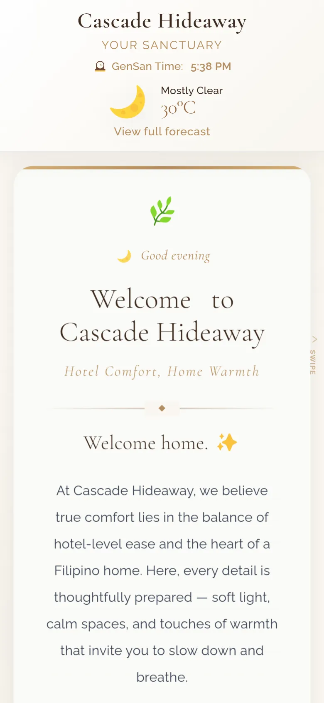
A greeting and the time in Manila.Eight tabs. See the table below.The Welcome tab.
Greeting and clockA greeting and the time in Manila.Who: Guest
Tab menuEight tabs. See the table below.Who: Guest
The eight tabs
Tab
What the guest finds
Welcome
A greeting, the local time and a word of the day.
Arrival
Door instructions, parking, the Wi-Fi with copy buttons, the smart lock and the aircon remote, early check-in rates.
Amenities
How things work in the home: the TV, the Wi-Fi sheet and other sheets.
Explore
A map of places nearby.
Dining
A map and a list of restaurants.
Delivery
Food delivery shops, with filters for Grab and Panda and a search box.
Guidelines & Info
House rules, ways to contact the host, and the weather.
Departure
A check-out list, a way to report an issue, and a link to message the host.
The check-out list is not saved. If the guest closes the page, the ticks are gone.
The maps can be slow to load the first time.
The owner keeps the guide up to date. If a guest tells you something in it is wrong, tell the owner.
Messenger and the concierge
Guests message the Facebook Page. The replies come from Cassy, the home's digital concierge. She says clearly that she is digital and that she works with Marifel and the team. The public link is Messenger. You can read more about her in Cassy.
Hi, is your place free from the 12th to the 14th?
Hello, thank you for writing. I am Cassy, the home's digital concierge, here with Marifel and our team. Let me check the calendar for those nights.
Those nights are open. For 2 nights the total comes to the price I can show you here. Would you like us to hold those dates for you?
Example only. Guest name: Sample Guest.
What the concierge can and cannot do
She can
She cannot, so she hands over to the host
Answer questions about availability, prices, amenities and house rules, from the live calendar and the price list.
Check a payment. Only a person can do that.
Answer how-to questions from the facts the team has taught her.
Decide a refund or a cancellation.
Take a booking inside the chat: dates, number of guests, name, phone, e-mail, then the payment details. She holds the dates for 24 hours.
Agree to a discount, a pet or an extra guest.
Forward the payment receipt photo to the Finance group.
Give out the door details, the Wi-Fi password or other private facts to someone who has not shown their check-in date and the first letter of the booking name.
Reply in the guest's language: English first, Taglish for Tagalog speakers, and Bisaya only after the guest keeps writing in Bisaya.
Handle a safety problem, a complaint, or anything she is not sure about.
When a guest is handed to the host
A handoff happens when the guest's message is about one of the topics below, or the concierge is unsure, or the chat has run long. A card arrives in the OPS group.
Topic
What the guest is told, in short
Payment
The host will check the payment personally and confirm.
Refund
Refunds are reviewed by the host, and it has been passed along.
Cancellation
The host has been told and will help.
Complaint
The host is alerted and the service partners are told.
Safety
Their safety comes first. If anyone is in danger, call the emergency number.
Access (door, code, key)
Door details come only from the host. She asks for the booking name and check-in date, and gives the on-ground person's number if nobody answers within minutes.
Priority (guest is staying now and asks for the host)
The host has been alerted and will answer here first.
Special request (discount, pet, extra guest)
The host would like to consider it personally.
Not sure
She brings the host in.
Things that surprise people:
After a handoff, the concierge keeps answering the guest's other questions. She does not go quiet. After a safety report she pauses for 24 hours, but a safety or lock-out message always gets through.
If you type a reply straight in the Facebook Page inbox, the concierge pauses on that chat for 2 hours and the guest's open handoffs are closed.
The same question inside 24 hours does not make a second card. A new message on the same matter arrives as Follow-up to #CH-SAMPLE, with no options.
Sometimes the concierge is set to suggest only. Then the guest is told the host will reply personally, and OPS gets a 💬 GUEST · draft card with a suggested reply and no buttons. If the message is not routine, the card adds a line that starts ⚠️ This reads as (a payment claim, refund, cancellation, complaint, safety or access issue) with the rule to follow: check Finance before believing a payment, never promise money back outside the 5-day rule, call the guest for safety. Write your own reply.
Two smaller host cards: 💬 GUEST · handoff · attachment means the guest sent a photo or file that is not a payment receipt - open the chat and look. 💬 GUEST · glance means the concierge answered but wants a person to check its answer (or it could not read the calendar and told the guest the dates will be confirmed) - read the chat and reply if needed.
I sent the payment but I did not get any confirmation yet.
Thank you for telling me. Our host will check the payment personally and send you the confirmation. I have passed your message along.
Example only. Guest name: Sample Guest.
The host card in OPS
Tap a button to see what it does. This is a copy. Nothing is really sent.
💬 GUEST · handoff · payment · 3:41 PM 🛎 Guest needs the host (payment) Guest: Sample Guest (Messenger account) > I sent the payment but I did not get any confirmation yet.
Option 1: Thank you, Sample Guest. We are checking your payment now and will confirm your booking here shortly. Option 2: Hello Sample Guest, thank you for your payment. We will check it today and send your confirmation. Please keep your receipt. Tap an option to send it to the guest, or reply to this message to write your own. #CH-SAMPLE
You tap: Send option 1. Who can tap it: Anyone in the group.
Careful: Sends option 1 as it is to the guest. You cannot take it back.
Option 1 is sent to the guest on Messenger, signed with your first name and Cascade Hideaway. The card changes to show who replied and what was said, and the handoff is closed. The guest has it now. To change the words first, use Write my own. If another person already handled it, you see Already handled.
You tap: Send option 2. Who can tap it: Anyone in the group.
Careful: Sends option 2 as it is to the guest. You cannot take it back.
Option 2 is sent to the guest on Messenger, in the same way as option 1. The card is rewritten and the handoff is closed.
You tap: ✍️ Write my own. Who can tap it: Anyone in the group.
The bot posts: Reply to THIS message with what you want to send the guest. Reply to it, type your words and send. Your text goes to the guest, signed with your first name. Replying straight to the original card also works.
How to answer a handoff
Open the card in the OPS group. Read the guest's words at the top.
Read Option 1 and Option 2. Choose the one that fits.
Tap Send option 1 or Send option 2. Or tap ✍️ Write my own.
For your own words, reply to the card that has the code #CH- at the bottom. Type your message. Send.
Check the card changed to show your reply.
You can also answer in the Facebook Page inbox. The card has a link to it. Past handoffs are listed on the Guests page, under Messenger handoffs.
A guest who cannot get in
An access, safety or priority handoff is urgent. It also posts a red note in the Finance group, and an e-mail titled URGENT goes to the host inbox, so someone who is awake sees it. These extra notes have no buttons. Answer from the OPS card.
Answer the guest at once. Use Send option 1 or reply to the card.
Set a new code in the lock app, or send the on-ground person. See The door code.
If the guest is in danger, they must call the emergency number first.
Steps to follow by symptom and by alert card, and who to ask.
Most problems have a simple next step. Pick what you see. The guide tells you what to do. If it is about servers, keys or an app that will not open, the answer is always the same: tell Lloyd.
How an alert reaches you
The system checks things all day. When something is wrong, it posts a card in Telegram. The first line shows the colour and the subject. The last line starts with Do: and tells you the one thing to do.
By symptom: what is wrong?
What is wrong?
The Cleaner app will not submit.
Read the warnings on the Submit screen. They say what is missing, such as an issue note, a photo that did not upload, or the timer.
Check the list: at least 5 photos before cleaning, at least 2 kitchen photos, the supply log saved, every Confirm and Leave item shown (four or more, depending on the cleaning type), and at least 5 photos after cleaning.
Check your signal. The app does not try again by itself. When the signal is back, tap Submit Now once and wait.
Do not clear your browser data. Your draft is saved. If the app asks, tap Resume.
Still stuck after two tries? Take a screenshot and tell Lloyd. The app also sends him an error card by itself.
A photo will not upload.
Check your signal. Move to a place with better signal, or use Wi-Fi.
Keep the app open until the photo finishes. Do not switch to another app.
Take the photo again. A photo that failed shows a warning on the Submit screen.
If the camera does not open, check in your phone settings that your browser may use the camera. Then reload the app.
Cannot get a meter photo at all? The app allows a meter skip only now and then. If it does not allow it, take the photo. Tell Marifel what happened.
The power is out.
Look in the OPS group for a brownout card or notice. If there is one, the cut is planned and nothing is broken.
Planned cut: keep the emergency light close. The EcoFlow should have been charged the day before.
No notice? Post in the OPS group what you see and the time. Tell Lloyd. The system does not warn about cuts that were not planned.
A guest is in the unit? Tell Marifel so she can write to the guest.
Tell Marifel or Lloyd right away. The host must act now. A red ALERT card about guest access appears in Telegram.
Do not give out a door code yourself. Each guest gets a new code, and only the host sends it.
Ask the guest for the booking name and the check-in date. The host checks who they are before helping.
If anyone is in danger, tell them to call 911.
A Telegram button says your account is not mapped.
The system does not know your Telegram account yet, so it will not let you use that button. Nothing was changed. The card stays open for someone who is mapped.
Do not tap the button again.
Ask a mapped person to tap it. Lloyd can.
Ask Lloyd to map your account if you need these buttons.
Who was waiting for Cassy?
Cassy did not answer in Telegram.
Start your message with her name, like Cassy, who arrives this week? Or type /cassy and your question. She ignores messages that are not for her.
Ask in the Finance group or the OPS group. She does not answer in other chats.
If she says she could not reach the model, wait one minute and ask again.
Spending questions: she cannot read spending. In the Finance group, type /summary. In the OPS group she never shows money.
Still nothing after a few minutes? Tell Lloyd.
A guest wrote on Messenger and got no answer.
Open the Facebook Page inbox and answer the guest yourself. Or look for a guest card in the OPS group and use Send option 1, Send option 2 or Write my own.
If a person typed a reply in the Page inbox, Cassy stays quiet on that chat for 2 hours. This is normal.
A guest who cannot get in, or who feels unsafe, causes a red ALERT card. A person must answer at once. See Guests and Messenger.
Many guests with no answer? Tell Lloyd right away.
By alert card: what did you get?
What does the first line of the card say?
🔴 ALERT. Something needs a person now.
Read the words after the dot. They name the problem.
Read the Do: line at the bottom of the card. It is the one thing to do.
Do it. If it is not your job, tell Marifel or Lloyd at once.
🟡 ATTENTION. Worth a look today. It is not an emergency.
One card can hold up to five points. The last line may say more are in the dashboard.
Read each point and the Do: line.
Do what is yours. Pass the rest to Marifel or Lloyd.
🔴 ALERT · missed cleaning. A check-out in the last 14 days has no cleaning report.
Find out if the clean was done. Ask the cleaner.
If it was done, send the report in the Cleaner app. Use the stay picker to choose the right stay. The alert closes by itself.
If it was not done, tell Marifel at once.
The system sends a reminder on day 3. From day 4 it becomes a task in the dashboard and sends no more cards.
🔴 ALERT · turnover unresolved. A check-out from 2 or more days ago is still open. This card comes once.
Tell Marifel. Find out what is missing: the clean, the report, or the photos.
Fix it before the next guest arrives.
After this card, the problem stays as a task in the dashboard.
A yellow turnover check card in the Finance group means the report exists but has a problem. It can be no meter reading, fewer than 5 photos, or an unfinished checklist. Marifel follows it up.
🟡 ATTENTION · rain warning. A guest arrives or leaves today and rain is likely in the next few hours.
Put an umbrella and a towel at the entrance.
Marifel warns the arriving guest.
Make sure the cleaner knows.
You get this card once a day at most.
🟡 ATTENTION · brownout. The power company plans a power cut. The card gives the day and the hours.
Charge the EcoFlow the day before.
Keep the emergency light ready.
Guests are told only if they ask.
This card covers planned cuts only. If the power goes out and no card was posted, post in the OPS group and tell Lloyd.
🚩 Meter photo flagged. The card says the photo is not a meter, does not match the number typed, or could not be read.
Cleaner: at your next sign-in the app asks you for a new meter photo. Take it clearly, with the numbers in view.
Office: look at the photo before paying the cleaner.
🟡 ATTENTION · receipt waiting. A guest's payment receipt has waited 2 to 3 hours in the Finance group.
Scroll up to the receipt card.
Check that the money is really in the account. Do not trust the screenshot alone.
Tap Confirm booking or Decline. Only mapped staff can. Cannot undo in Telegram
🟡 ATTENTION · hold expired. A guest did not pay within 24 hours. The dates are free again.
Tap Show as text to get the ready message for the guest. Copy it and send it yourself.
If the guest paid another way, ask Lloyd to bring the hold back from the dashboard.
Who to ask
Ask
About
Marifel
Guests and bookings. Payments and receipts. Messenger. Telegram Finance questions. Cleaning days.
Honey
How to do a clean. Where things go in the unit.
Lloyd
An app that will not open or sign in. A forgotten PIN. A button that says not mapped. Any error or alert about the system, servers or keys.
The owner
Prices, staff matters and big decisions.
911
Anyone in danger. Call first, then tell the team.
Numbers are not written in this guide. Use the numbers your team already shares with you.
Policies and glossary
Fees, refunds, check-in and check-out times, house rules, and a list of the words we use.
Guests read these rules on our booking site. You must say the same thing. If you are not sure, do not guess. Check the booking site or ask Marifel.
Fees and payment
Topic
The rule
Reservation fee
50 percent of the stay. It secures the dates once we have checked the payment.
Check-in less than 5 days away
From the same day up to four days ahead, only full payment is offered. There is no 50 percent reservation.
Hold
Five or more days before check-in, the dates are held for 24 hours while the guest sends the fee. If nothing arrives, the hold is released and the guest owes nothing.
Balance and deposit
Due at least one day before check-in. The deposit is PHP 1,000 and is refundable.
Deposit return
The deposit is returned after the check-out inspection, when there is no damage, extra cleaning or broken rule. Airbnb bookings have no cash deposit.
Cancel 5 or more days before check-in
The reservation fee is fully refunded.
Cancel less than 5 days before check-in
The reservation fee is kept for the reserved dates.
Airbnb bookings
They follow the cancellation rules of Airbnb.
How guests pay
Directly to the host, by GCash or bank transfer. There is no other payment company.
Cleaning
The nightly price already includes cleaning. We never add a cleaning fee at check-out.
Length-of-stay discounts
The booking site shows a discount that grows with the stay: 5 percent from 2 nights, then 10, 15 and 20 percent, and 25 percent from 28 nights. The booking site always shows today's prices.
How a direct booking is paid
The guest sends a booking request on the booking site or on Messenger. This is a request, not a booking yet.
The dates are held for 24 hours, or the guest pays in full when check-in is under 5 days away.
The guest sends the reservation fee and a screenshot of the payment.
The team checks that the money really arrived, then confirms. The guest receives a confirmation.
At least one day before check-in, the guest pays the balance and the PHP 1,000 deposit.
After check-out and the inspection, the deposit goes back to the guest.
Check-in and check-out
When
Time (Manila)
Note
Check-in
2:00 PM
An early check-in may be possible, depending on the calendar. The guest must ask.
Check-out
12:00 noon
A late check-out may be possible, depending on the calendar. The guest must ask.
House rules
Guests. The unit holds up to 3 guests. Day visitors are welcome if the guest tells us first. Extra overnight guests are not allowed.
Gatherings. No parties or events. Cascade is a quiet home.
Shoes. Take shoes off at the entrance. Slippers are at the shoe rack.
Smoking. Smoking is welcome on the porch only, not inside.
Quiet hours. From 10:00 PM, out of care for the neighbours.
Energy. Switch off lights, air-conditioning and appliances when not in use.
Glossary
These are the words we use at Cascade. In other chapters, a marked word shows its meaning when you tap or hover on it.
Balance
The rest of the stay cost after the reservation fee. The guest pays it, with the security deposit, at least one day before check-in.
Brownout
A planned power cut announced by the power company. The team charges the EcoFlow the day before and keeps the emergency light ready.
Cassy
The digital assistant of Cascade Hideaway. She answers guests on Messenger and helps staff in Telegram. From Telegram she never sends anything to a guest.
Concierge
The guest side of Cassy on Messenger. She answers questions and takes bookings, and she passes anything difficult to the host.
Confirm and Leave
The last checks in Phase 4 of the Cleaner app, such as the air conditioner at 24°C, the EcoFlow at 100%, the door lock and the utensil set. Four is the minimum. A turnover or a deep clean shows more, and you confirm every item shown.
Deep clean
A longer, fuller clean of the unit that is done now and then, not after every guest. It has its own choice in the Cleaner app.
Deposit
The PHP 1,000 refundable security deposit on a direct booking. It is paid with the balance and is returned after the check-out inspection finds no problem. Airbnb bookings carry no cash deposit.
Digest
The short morning card the system posts in the OPS group at 08:00. It lists arrivals, departures and anything that needs care that day. On a quiet day it stays silent.
Draft
A reply that Cassy suggests for a guest message. A draft is only text for you to copy. Nothing is sent to the guest until a person sends it.
Dwell time
The waiting time for cleaning products to work on a surface. The Cleaner app has a timer for it in Phase 2, from 5 to 20 minutes.
EcoFlow
A battery power station that stays in the unit. It keeps the important things running during a power cut. It is house equipment, not something a guest can borrow.
Finance group
The Telegram group for Lloyd and Marifel. Money cards, payment receipts and expense entries appear here.
Handoff
A guest request that Cassy cannot settle alone, so she passes it to the host. It appears as a card in the OPS group until someone answers it.
Hold
The dates kept for a guest for 24 hours while the guest sends the reservation fee. If nothing is paid in that time, the hold is released and the guest owes nothing.
Inquiry
A direct booking request from the booking site or Messenger that is not confirmed yet. It becomes a booking when the payment is checked and confirmed.
Ledger
The official record of money in and money out. Confirmed expenses and income are written here.
Mapped staff
A person whose Telegram account is linked to a staff profile. Some buttons, such as Confirm booking, work only for mapped staff. If a button says your account is not mapped, ask Lloyd.
Meter skip
The Cleaner app lets you skip a meter photo now and then, but never two in a row. If the app will not let you skip, take the photo.
Mid-stay clean
A clean during a guest's stay, not after check-out. It has its own choice in the Cleaner app.
Notice
A dated item on the operations board, such as a brownout, a holiday, an event or a reminder. Notices appear in the morning digest.
OPS group
The Telegram group for the whole team, including cleaners. It carries alerts, cleaning reports and guest hand-offs. It never shows money.
Promo
A temporary discount on the nightly price. The owner sets it and it ends on a date.
Rate card
The one stored list of nightly prices. The booking site and Cassy both read it, so a price is changed in one place only.
Receipt
The screenshot or photo that proves a payment. A guest sends it to confirm a booking, and staff post receipt photos of purchases in the Finance group.
Reservation fee
50 percent of the stay, paid to secure the dates once the payment is checked. It is fully refunded when the guest cancels 5 or more days before check-in.
Stay picker
The list in Phase 0 of the Cleaner app where you choose which guest stay this cleaning belongs to.
Supply log
The pop-up in Phase 3 of the Cleaner app where you record the supplies you used. You must save it before you can go on to Phase 4.
System of record
The official record behind the dashboard. It holds bookings, guests, cleaning reports, stock and money. Cards and e-mails are only messages about it.
Turnover
The full clean of the unit after a guest checks out, to get it ready for the next guest.
Work order
A repair or fix task. An urgent note from a cleaner becomes a work order, and it is closed in the dashboard when the job is done.
Training checklist
A list of things you should be able to do, and a plan for your first week.
Use these lists to check that you are ready to work. Tick each line when you can do it without help. Your ticks are saved in this browser. Tap a link if you need to read the chapter again.
Day 5. Answer a guest with a Cassy draft while Marifel checks it before you send.
Everyone, at the end of the week. Read Telegram, Cassy and When something goes wrong. Tick the boxes you can do. Talk with Lloyd about the ones you cannot.